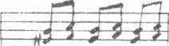
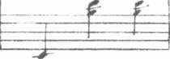
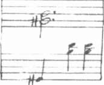
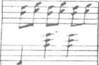
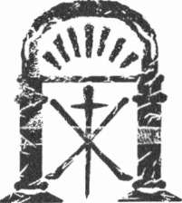
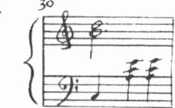
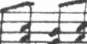
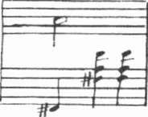
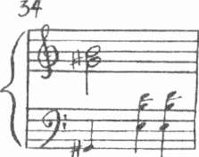

"Bu sabah kütüphaneye baktım. Çok ilginç kitaplar var. Bu nedenle dün akşam seni görebildiğimize şaşırdım diyebilirim."
Anatole kahverengi gözleriyle sertçe baktı. "Ne demek istiyorsun?"
"Senin ilgini uzun süre çekecek çok fazla kitap olduğunu ve bunca kitabın arasında Mösyö Baillard'ın kitabını nasıl bulabildiğine şaşırdığımı söylemek istiyorum." Leonie'nin gözleri kısıldı. "Sen ne demek istediğimi sanmıştın?"
"Hiçbir şey," diye yanıtlarken Anatole bıyığının ucunu kıvırıyordu.
Kaçamak yanıtı fark eden Leonie çatalını bıraktı. "Şimdi sen söyleyince aklıma geldi. Dün akşam yemeğinden önce odama geldiğinde kitap koleksiyonu hakkında hiçbir şey söylememen de çok ilginçti doğrusu."
"Hangi kitaplar?"
"Örneğin beaııx livres koleksiyonu." Tepkisini görebilmek için bakış-
larını yüzüne dikti. "Sonra gizli güçlerle ilgili kitaplar. İçlerinden bazıları zor bulunan yapıtlar."
Anatole hemen yanıtlamadı. "Şey, antika kitapların çok sıkıcı ol-duğunu söylemiştin," dedi sonunda. "Seni sıkmak istemedim."
Leonie güldü. "Tanrı aşkına Anatole, neyin var senin? Senin bana söylediklerinden bildiğim kadarıyla bunların bir kısmı oldukça ahlaksız olarak kabul ediliyormuş. Hatta Paris'te bile. Böyle bir yerde karşılaşaca-
ğımı ummuyordum. Üstelik senin hiç söz etmemen de bence..."
Anatole sigarasını içerek yanıt vermeden oturdu.
"Eeee?" dedi Leonie.
"Eee, ne?"
"Bu kitaplarla neden ilgilenmiyorsun?" Durup soluk aldı. "Ayrıca da-yımızın niçin bu tür kitaplardan bu kadar geniş bir koleksiyonu var? Isolde bunu anlatmadı."
"Aslında anlattı," dedi Anatole sertçe. "Sen Isolde'ü eleştirmeye kararlısın. Anlaşılan ondan hoşlanmıyorsun."
248
Tapınak
Leonie'nin yanakları kızardı. "Eğer böyle bir izlenime kapıldıysan yanılıyorsun. Isolde'ün sevimli biri olduğunu düşünüyorum." Sözünü kes-mesini önlemek için sesini yükselterek devam etti. "Beni tedirgin eden Isolde değil, mekânın kendisi. Özellikle kütüphanedeki gizli güçlerle ilgili k Kapları göz önüne alınca."
Anatole içini çekti. "Onları fark etmedim. Olayı büyütüyorsun. Bence en yalın açıklama senin tanımınla Jules dayının oldukça liberal bir zevki olduğu biçimindedir. Belki de satın aldığı zaman kitapların çoğu evdey-di."
"Bir kısmı çok yeni," diye ısrar etti Leonie.
Onu kışkırttığını biliyor ve geri çekilmek istiyordu ama kendini bir lııı Iü kontrol edemiyordu.
"Anlaşılan sen bu tip kitaplar hakkında uzmansın," dedi Anatole kuş-
kuyla.
Anatole'ün soğuk ses tonu karşısında Leonie irkildi. "Hayır, ama ben ile bunu demek istiyordum, yani uzman olan sensin! Bu nedenle bu kolek-siyondan hiç söz etmemen beni şaşırttı."
"Buradaki kitaplar ya da buradaki her şeyle ilgili bir gizem bulmaya niçin bu kadar kararlı olduğunu gerçekten anlamıyorum."
Leonie öne eğildi. "İster itiraf et ister etme Anatole ama Domaine'in garip bir yönü var." Bir an durakladı. "Doğrusunu istersen, kütüphaneye girmiş olduğundan bile kuşkuluyum."
"Yeter artık!" derken sesi uyarıyla boğuklaşmıştı. "Bugün içine hangi şeytanın girdiğini anlamıyorum."
"Beni eve biraz gizem katmak istemekle suçluyorsun. Böyle davrandığımı itiraf ederim. Ama sen de tam tersini yapmaya kararlı görünüyorsun."
Anatole bu konuşmadan artık sıkılmıştı. "Ağzından çıkanı kulağın duysun! Isolde ikimizi de samimiyetle karşıladı. Onun durumu da pek iyi sayılmaz. Uzun zamandır burada çalışanlar, sanırım onu evin hanımı rolünü üstlenmek isteyen bir yabancı olarak görüyorlardır. Anladığım kadarıyla Lascombe sık sık evden uzak kalırmış ve sanırım uşaklar evi yönetirmiş. Böyle şeyler söylememelisin."
249
Kate M o s s e
Fazla ileri gittiğini anlayan Leonie, geri adım attı. "Ben yalnızca..."
Anatole dudaklarının kenarlarını silip peçetesini masaya attı. "Dün akşam ilgini çekecek bir kitap bulmak istemiştim. Tanımadık bir evde yabancılık çekmeni istemedim. Isolde sana nazik davrandı ama sen her şeyde bir kusur bulmaya çalışıyorsun."
Leonie'nin münakaşa etme arzusu uçup gitti. Daha doğrusu tartışma yaratmak için neden bu kadar istekli olduğunu bile anımsamıyordu.
"Sözlerim seni incittiyse özür dilerim ama..." diye söze başladı ancak geç kalmıştı.
"Söylediğim hiçbir şey senin bu çocukça bozgunculuğunu durdurma-yacak!" dedi Anatole sertçe. "Bu nedenle bu sohbeti sürdürmenin hiçbir yararı yok." Çantasıyla şapkasını aldı. "Hadi, araba bekliyor."
"Anatole lütfen," diye yalvardı ama ağabeyi meydanı geçmeye başla-mıştı. Pişmanlık ve kırgınlık arasında kalan Leonie'nin onu izlemekten başka çaresi yoktu. Dilini tutmuş olmayı her şeyden çok istiyordu.
Rennes-les-Bains'den uzaklaşırken, incindiğini hissetti. Kabahat onun değildi. Belki başında o hatalıydı ama zarar vermek gibi bir niyeti yoktu.
Anatole gereksiz yere kendini hakarete uğramış gibi görmeye kararlıydı.
Üstelik bu bahanelerin ardında daha sinsi bir fikir yatıyordu.
Bana karşı Isolde'ü savunuyor.
Bu kadar kısa bir tanışıklıktan sonra son derece haksız bir davranıştı.
Daha da kötüsü bu fikir Leonie'nin kıskançlığa kapılmasına yol açmıştı.
250
43
O O
Domaine de la Cade'a dönüş yolculuğu sıkıntılı geçti.
Leonie surat astı. Anatole onunla hiç ilgilenmedi ve eve gelince arka-ma bile bakmadan arabadan inip gözden kayboldu. Leonie upuzun, sıkıcı ve yalnız bir öğleden sonrayla baş başa kaldı.
Kimseye görünmeden hızla odasına çıktı ve yüzükoyun yatağına uzandı. Ayakkabılarını çıkarıp yere attı ve sanki nehrin üzerindeki bir salda yatıyormuş gibi ayaklarını aşağıya sallandırdı.
"Canım sıkıldı."
Şömine rafındaki saat ikide çaldı.
Leonie işlemeli yatak örtüsünün ince, parlak ipliklerini çekerek Rum-pel.stiltskin'em yaraşır bir yığın oluşturdu. Saate baktı.
İkiyi iki geçiyor. Zaman ilerlemiyordu.
Yataktan kalkıp pencereye yaklaştı, perdeyi açıp dışarı baktı. Çimler
,illin sarısı ışıkla kaplanmıştı.
Her tarafta yaramaz rüzgârın yarattığı hasarın izleri vardı. Yine de bahçe düzgün görünüyordu. Belki biraz yürümek iyi gelirdi. Bahçede do-laşabilirdi.
Gözleri dikiş kutusuna takılınca, elini malzemelerin altına sokup siyah kitabı aradı.
Elbette...
(*) Her şeyi altına çevirebilen masal cücesi.
251
Kate M o s s e
Tapınağı aramak için çok iyi bir fırsattı. Günü geçirmek için sabahle-yin yaptığı plana geri dönüş... Hatta belki tarot kartlarını bile bulabilirdi.
Kitabı kutudan çıkardı ve bu kez tek kelime atlamadan okudu.
Bir saat sonra yeni yünlü ceketini, sağlam yürüyüş ayakkabılarını giymiş, şapkasını başına yerleştirmiş terastan aşağıya iniyordu.
Etrafta kimse görünmüyordu ama açıklama yapmamak için hızla yü-
rümeye başladı. Evden görülmeyecek noktaya gelene dek neredeyse koşar adımlarla zakkum ve ardıç çalılarının önünden geçti. Yüksek şimşir çitin aralığından geçtikten sonra yavaşladı ve soluk aldı. Şimdiden terliyordu.
Başını kaşındıran şapkasını çıkarınca temiz havanın saçlarında dolaşma-sından keyif alarak eldivenlerini ceplerine tıktı. Hiç kimsenin gözetimi altında olmadan, kendi kendinin efendisi olarak yalnız kalmak hoşuna gitmişti.
Ormanın kenarında ürkmenin ilk belirtilerini hissederek durakladı.
Sessizlik elle tutulacak kadar yoğundu, eğreltiotlarının ve düşen yaprakların kokusu havayı doldurmuştu. Omzunun üstünden geldiği yöne baktı ve ormanın loşluğuna girdi. Az sonra ev gözden kayboldu.
Ya dönüş yolunu bulamazsam?
Leonie gökyüzüne baktı. Eğer çok uzun kalmazsa ve hava bozmazsa batıya, batan güneşe doğru yürüyüp eve ulaşacaktı. Üstelik burası özel bir arazinin içinde, bakımı yapılan bir ormandı. Bilinmeyene doğru bir gidiş
sayılmazdı.
Paniğe kapdmaya gerek yok.
Devam etmek için kendini ikna edince Leonie bir macera romanı-
nın kahramanı gibi hissederek uzamış otların örttüğü patikada yürümeye başladı. Kısa sürede patikanın çatalına ulaştı. Sol taraf ihmal edilmiş gibi görünüyordu. Şimşir ve defne ağaçlarından sular damlıyordu. Meşelerin ince tüylü yaprakları ve Akdeniz çamlarının yorgun ve kavrulmuş sivri iğneleri zamanın istenmeyen yükü altında eğilmiş gibiydi. Sağ taraftaki patika daha sıradandı.
Eğer bu arazide çoktan unutulmuş bir tapınak varsa, evden uzakta, ormanın içinde olması gerekmez miydi?
252
Tapınak
Leonie soldaki gölgeli patikaya saptı. Pek sık kullanılmadığı belliydi.
Bahçıvanların el arabalarının yeni açılmış izleri yoktu, düşen yapraklar toplanmamıştı, anlaşılan son zamanlarda kimse buradan geçmemişti.
Yokuş yukarı yürüyordu. Taşlar, engebeli arazi, iki yandaki çalılardan dökülen dallar patikayı neredeyse görünmez hale getiriyordu. Sanki doğa ıı/erine kapanıyormuş duygusuna kapıldı. Patikanın yukarısında, loş ışıkta demir karası bir dantel gibi birbirine girmiş alıç, porsuk ve ormanaltı çalı-
larıyla kaplı dik bir toprak set vardı. Leonie göğsünde bir çarpıntı hissetti.
I ler dal, her kök terk edilmişlikten söz ediyordu. Hayvanlar bile karanlık oı manı terk etmişti. Ne kuşlar ötüyor ne de çalıların arasındaki yuvalarına giden tavşanlar, tilkiler, fareler göze çarpıyordu.
Patikanın sağında toprak dik bir uçurum biçimini aldı. Leonie, ayağıyla yerinden oynattığı taşların aşağıya düşerken çıkardığı sesleri duyabiliyordu. Korkusu artmaya başladı. Bahçıvanın ve Mösyö Baillard'ın kitabında iddia ettiği gibi burada hayaletlerin ya da ruhların dolaştığını düşünmek için çok geniş bir hayal gücüne gerek yoktu.
Yokuşun sonunda bir tarafından uzaktaki dağların göründüğü düzlüğe erişti. Bir sel yatağı üzerinde küçük bir taş köprü vardı; ilkbaharda eriyen kar sularının şiddetli akışıyla açılmış olan kanal şimdi kupkuruydu.
Alçak ağaçların tepesinden görünen uzak dünya bir fotoğraf gibi gözlerinin önünde açılmıştı. Bulutlar sonsuz gibi görünen gökte koşturuyor, tepelerin kıvrımları ve çukurlarında bir yaz sonu öğleden sonrasının sıcak sisi süzülüyordu.
Leonie derin bir soluk aldı. Uygarlıktan, nehirden, Rennes-les-Bains'in gri ve kırmızı çatılı evlerinden, Hötel de la Reine'den, çan kulesinin ince çizgisinden harika bir şekilde uzaklaşmış gibiydi. Ormanın sessizliğinde; kafelerin, barların gürültüsünü, mutfaklardaki tıkırtıları, Perou Meydam'nda sırasını bekleyen sürücülerin haykırışlarını, Gran'Rue üzerindeki iki tekerlekli arabaların koşum takımlarının takırtısını hayal edebiliyordu.
Kilise çanının incecik sesini rüzgâr bulunduğu yere kadar taşıyordu.
Saat şimdiden üç olmuş.
Sesin yankısı kaybolana dek bekledi. Kapıldığı macera hissi sesle birlikte yok oldu. Bahçıvanın sözleri aklına geldi.
253
Kate Mosse
Ruhunuzu yakın tutun.
Keşke bahçıvana ya da başka birine yolu sorsaydı. Her zaman her şeyi kendi başına halletmeyi yeğlediğinden, yardım istemekten nefret ederdi.
Hepsinden çok kitabı yanına almadığına pişman oldu.
Ama artık geri dönemeyecek kadar uzağa geldim.
Leonie yanlış yolda olduğu kuşkusunu yenmeye çalışarak kararlılıkla yürümeyi sürdürdü. İçgüdüleri bu yöne gitmesini söylemişti. Ne haritası vardı, ne de yolun tarifini almıştı. Domaine arazisinin bir haritasını istemeyi önleyen gururu ve öngörü eksikliği nedeniyle kendine kızdı. Ama kütüphanede böyle bir harita gözüne ilişmemişti.
Nereye gittiğini kimse bilmiyordu. Düşse ya da yolunu kaybetse, kimse onu nerede arayacağını bilemezdi. Geldiğim yola işaret koymalıydım, diye geçirdi içinden. Kâğıt parçaları ya da Hansel ile Gretel'in yaptığı gibi beyaz çakıllarla evin yolunu işaretleyebilirdi.
Kaybolman için hiçbir neden yok.
Leonie ormanın derinliklerine doğru yürüdü. Anlaşılan kuşlar bile ormanın bu kadar içine gelmiyordu. Geç tarihte olgunlaşan tohumlarla yüklü yabanıl ardıç çalılarının çevrelediği ağaçlıklı bir açıklıkta buldu kendini.
Çarpık gölgeler görüş alanına girip çıkıyordu. Ağaçların yeşil" örtüsü altında ışık kalınlaşıyor ve tanıdık, güvenli dünyayı bilinmeyen çok eski tarihli bir şeyle değiştiriyordu. Ağaçların, yabangüllerinin, yakacak çalıların arasına hiçbir uyarı yapmadan bir sis bulutu yerleşmişti. Nemli hava tüm sesleri boğuklaştırırken, mutlak ve delinmez bir dinginlik hüküm sürü-
yordu. Leonie sisin soğuk parmaklarının bir atkı gibi boynuna sarıldığını, tıpkı bir kedi gibi eteğinin altından bacaklarına tırmandığını hissetti.
Birdenbire, ağaçların arasından tahta, toprak ya da ağaç kabuğundan olmayan bir şey gözüne çarptı. Altı ya da sekiz kişi alabilecek büyüklükte, çatısı dimdik yükselen, kemerli giriş kapısının üzerinde taş bir haç bulunan minik bir tapınak duruyordu karşısında.
Leonie soluğunu tuttu.
Buldum.
254


Tapınak
Tapmağın çevresi patikayı gölgeleyen, kökleri ihtiyar bir adamın elleri gibi kıvrılmış yamuk yumuk porsuk ağaçlarıyla kaplıydı. Çamurun içinde hiçbir iz yoktu. Böğürtlenler ve yabangülleri fazla büyüyüp uzamıştı.
Gurur ve beklentiyle ileri doğru birkaç adım attı. Çizmelerinin altın-da yapraklar hışırdadı, ince dallar kırıldı. Bir adım daha... Şimdi kapının önünde duruyordu. Başını kaldırıp yukarı baktı. Ahşap kemerin üstünde simetrik ve kusursuzca sivrilmiş antik siyah harflerle iki dize yazılmıştı.
Aıci lo tems s'en
Va res l'Eternitat.
Leonie dizeleri iki kez yüksek sesle okurken, sözcüklerin tanımadık seslerini ağzında yuvarladı. Cebinden kurşunkalemini çıkarıp bir kâğıt parçasına yazdı.
Arkasından bir ses geldi. Bir hışırtı mı? Bir yabanıl hayvan mı? Bir dağ kedisi mi? Sonra sanki bir geminin güvertesine bir halat sürtünüyor-
ıııuş gibi daha farklı bir ses duyuldu. Bir yılan mı? Özgüveni uçup gitmişti.
Ormanın karanlık gözleri üstüne gelir gibiydi. Kitapta okudukları, ürkü-
tücü bir açıklıkla aklına geldi. Önseziler, akıldan çıkmayanlar, iki dünya arasındaki tülün çekildiği yer...
Bir an tapınağa girmek istemedi. Ama korumasız bir biçimde ağaçla-rın arasındaki açıklıkta tek başına kalmaktan daha iyiydi. Kanı beyninde zonklarken, uzanıp kapının üstündeki ağır metal halkayı tuttu ve içeri doğru itti.
Önce hiçbir şey olmadı. Bir daha itti. Bu kez yerinden çıkan bir meta-lin sürtünme sesi geldi kulağına ve kilit açıldı. İnce omzunu kapıya dayadı ve tüm gücüyle itti.
Ağır ağır, titreyerek açıldı.
255
40
o o
Leonie tapınağın içine girdi. Soğuk havayla birlikte toz ve yüzyıllar boyunca yakılmış tütsülerin kokusu onu karşıladı. Bir koku daha vardı.
Burnunu büzüştürdü. Karaya vurmuş bir balıkçı teknesinin tuzlu gövdesi gibi deniz ve balık kokuyordu.
Ellerinin titremesini durdurmak için yumruklarını sıktı.
işte burası.
A n a kapının sağında, batı tarafında iki metre yüksekliğinde, iki buçuk metre eninde ve ancak altmış santim derinliğinde günah çıkarma yeri vardı. Koyu renk ahşaptan yapılmıştı ve Paris'teki kilise ve katedral-lerden farklı olarak hiçbir süslemesi yoktu. Konuşma ızgarası kapalıydı.
Koltuklardan birinin önünde tek bir mor perde sarkıyordu. Bölmenin öteki tarafındaki perde yerinde yoktu.
Kapının hemen solunda ise içinde kutsal suyun durduğu kâse vardı.
Leonie irkildi. Kırmızı-beyaz mermer kâse, sırıtan bir iblis heykelinin sır-tında duruyordu. Kabarcıklarla kaplı kırmızı bir cildi, pençeye benzeyen elleri ayakları, kötü bakışlı delici mavi gözleri vardı.
Seni tanıyorum.
Les Tarots adlı kitabın ilk sayfasındaki gravürün aynısıydı.
Sırtındaki yüke karşın yüzündeki küstah ifadesi silinmemişti. Canlanmasından korkar gibi Leonie usul usul yaklaştı. Aradan geçen yıllar içinde sararmış bir kartın üzerindeki yazıyı okudu: ASMODEE, MAÇON
AU TEMPLE DE SALOMON, DEMON DU COUROUX.
256
Tapınak
"Asmodeus, Süleyman'ın tapınağını inşa eden gazap iblisi," dedi yüksek sesle. Üşümüş parmaklarının üstünde yükselerek içine baktı. Kutsal su kâsesi kuruydu. Mermere bazı harfler kazınmıştı. Parmaklarıyla harfleri ı/ledi.
'Bu işaretle sen onu fethedeceksin" diye mırıldandı.
Kaşlarını çattı. "O" kimdi acaba? Şeytan Asmodeus'un kendisi mi?
Başka bir soru aklına takıldı. Hangisi daha önce yapılmıştı, kitaptaki lotoğraf mı yoksa iblis heykeli mi? Hangisi orijinal, hangisi kopyaydı?
Tüm bildiği, kitabın 1870 tarihini taşıdığıydı.
Yünlü eteği döşeme taşlarının toz tabakasında kıvrımlar çizerken aşağıya eğilip, heykelin kaidesinde herhangi bir tarih ya da işaret olup olmadığına baktı. Yaşını ya da kökenini gösteren hiçbir ipucu bulamadı.
Ama Vizigot döneminden kalma değil.
Belki Isolde biliyordur, diye düşündü, biraz daha araştırmak için gör-düklerini aklına yazdı ve ayağa kalkıp orta bölüme doğru baktı. Tıpkı bir ilkokul sınıfı gibi tapınağın güney tarafında karşıya doğru bakan, ikişer kişilik üç ahşap sıra vardı. Herhangi bir süs, bir oyma, diz çökmek için bir minder görünmüyordu. Yalnızca her sıranın önüne ayak dayamak için uzun bir tahta yerleştirilmişti.
Duvarların beyaz boyası kabarmış dökülüyordu. Kemerli pencerelerde renkli cam yoktu ama içeri giren ışık odayı ısıtmaya yetmiyordu. Tapı-
nağın ibadet haçı; ahşap haçların oluşturduğu çerçevelere yerleştirilmiş, belki fotoğraf bile sayılmayacak, daha çok madalyonu andıran; Leonie'nin eğitimsiz gözüne bile fazla basit görünen çizimlerden oluşuyordu.
İsteksiz bir gelin gibi orta bölüme doğru ağır ağır yürürken, kapıdan uzaklaştığı için tedirgin oluyordu. Bir an arkasında biri varmış duygusuna kapılıp dönüp baktı.
Yine kimse yok.
Dar orta aralığın sol tarafına kötü niyetli çocuklara benzeyen küçük boyda alçı aziz heykelleri sıralanmıştı. Ahşap levhalara siyah harflerle yazılmış isimleri okumak için durakladı: Saint-Antonie, Mısırlı Ermiş, ön-lüğü Pirene Dağlan'nın çiçekleriyle dolu Sainte-Germaine, elinde asasıyla topal Saint-Roch. Bu yörede önemsenen azizler olduğunu varsaydı.
257
F: 17
Kale Mosse
Sunağa en yakın yerde zayıf, ufak tefek, dizine kadar inen kırmızı bir elbise giymiş, siyah saçları omuzlarına dökülen bir kadın heykeli vardı.
İki eliyle tuttuğu kılıç, tehdit etmekten çok savunmaya yönelik olduğunu gösterir gibiydi.
I leykelin altındaki kartta kılıçların kızı yazıyordu.
Leonie düşünceli bir şekilde baktı. Kılıçların kızı. Acaba Sainte Jeanne d'Arc'ın bir simgesi olabilir mi?
Bir ses daha çalındı kulağına. Yüksek pencerelere doğru baktı. Tatlı kestane ağaçlarının dalları çivi gibi camlara çarpıyordu. Kuşların kasvetli şarkılarının sesi.
Orta bölümün sonunda durup çömeldi ve dayısının tarif ettiği siyah kareyi ve yazdığına inandığı C, A, D, E harflerini aradı. En küçük bir iz bile yoktu ama döşeme taşlarına kazınmış bir yazı gözüne takıldı.
"Fııjhi, poudes; Escapa, ııon," diye okudu ve not etti.
Doğrulup sunağa doğru yürüdü. Hatırladığı kadarıyla Les Tarots'takı tarife tamamen uyuyordu; yalnızca boş bir masa, mum, gümüş haç, dua kitabı, ilahi kitabı gibi hiçbir dinsel eşya yoktu. Tavanı Garnier Sarayı'nın gösterişli çatısı gibi parlak gök mavisine boyalı, sekizgen bir mihraba yerleştirilmişti. Sekiz panelin her biri rengi solmuş, yatay pembe çizgilerle süslenmiş duvar kâğıdıyla kaplanmış ve kırmızı, beyaz ardıç çiçekleri ve mavi yuvarlakların yer aldığı kuşaklarla birbirinden ayrılmıştı. Kâğıt kaplı panellerin her bağlantı yerinde altın rengine boyanmış alçı sopalar ya da asalar vardı.
Her birinin içine ise tek bir imge boyanmıştı.
Nereye bakmakta olduğunu fark eden Leonie irkildi. Sekiz tablo da tarot kartlarından alınmıştı ve sanki imgeler kartlardan çıkıp duvara yerleşmiş gibi görünüyordu. Bunların altında, Joker, Büyücü, Başrahibe, Aşıklar, Güç, Adalet, Şeytan, Kule adları, sararmış kartlara siyah mürek-keple yazılmıştı.
Kitapta da aynı sıralama var.
Leonie başını salladı. Dayısının yazdıklarının gerçeklere dayandığı-
nın daha iyi kanıtı olabilir mi? Biraz daha yaklaştı. Sıra başka bir soruya gelmişti: Dayısının kitabında anlatılan yetmiş sekiz karttan yalnızca neden 258
Tapınak
İm sekizi seçilmişti? Heyecana kapılarak kartların adlarını not etmeye baş-
l.ıdı ama cebinde bulduğu kâğıt parçasında fazla yer kalmamıştı. Üzerine not alabileceği bir şey bulmak için gözleriyle etrafı araştırdı.
Sunağın taş ayaklarının altında bir kâğıdın köşesini gördü ve çekip çı-
kardı. Ağır sarı parşömen kâğıda yazılmış piyano notaları. Diyezi, bemolü olmayan, tiz ve bas anahtarında dört dörtlük ölçüde bir melodi. Dayısının kKabının kapağındaki yazı aklına geldi. Bir melodi yazdığını söylüyordu.
Kâğıdı düzeltip notaları okumaya çalıştı ama çok basit olmasına karsın melodiyi bir türlü yakalayamadı. Kullanılan notaların sayısı pek fazla değildi, ilk bakışta çocukluğundaki piyano derslerinde çalışmak zorunda kaldığı dört parmak egzersizlerini anımsatıyordu.
Dudakları bir gülümsemeyle kıvrıldı. Şimdi düzeni görebiliyordu (' A-D-E (do-la-re-mi). Aynı notalar belirli bir sırayla devam ediyordu. Çok güzel. Kitapta belirtildiği gibi, ruhları çağıran müzik.
O anda başka bir fikir aklında beliriverdi.
Eğer notalar buradaysa, kartlar niçin burada olmasın?
Leonie bir an durakladı ve nerede bulduğunu anımsamak için kâğıdın lizerine tarihi ve "tapınak" adını yazıp cebine attı. Ardından taş tapınağı araştırmaya başladı. Parmaklarını tüm tozlu girintilere soktu, gizli bölmeler aradı ama hiçbir şey bulamadı. Bir deste kâğıdın saklanabileceği hiçbir eşya yoktu.
Eğer burada değilse, nerede olabilir?
Sunağın arkasına geçti. Artık gözleri loş ışığa alıştığından, mihrabın sekiz paneli arasına gizlenmiş küçük bir kapının dış hatlarını seçebildi.
Eliyle yoklayınca belli belirsiz bir girintinin bir zamanlar kullanıldığını gösteren bir açıklığa işaret ettiğini algıladı. Eliyle sertçe itti ama hiçbir hareket olmadı. Son derece sıkı kapanmıştı. Eğer burada bir kapı varsa, artık kullanılmıyordu.
Doğrulup ellerini beline dayadı. Kartların burada olmadığı gerçeğini kabullenmek istemiyordu ama saklanabilecek her yeri aramıştı. Bir kez da-ha kitabı okuyup yanıtı orada aramaktan başka çaresi kalmamıştı. Küçük tapınağı gördükten sonra yazıdaki gizli anlamları daha kolay çözebilirdi.
Eğer gerçekten varsa...
259
Kate M o s s e
Pencereye doğru bir göz attı. Işık azalıyordu. Ağaçların arasından süzülen ışık yerini karanlığa bırakıyordu. Alçı heykellerin gözlerinin kendisini izlediği duygusuna kapılırken, tapınağın atmosferi de değişmeye başlamıştı.
Bir yerden hava akımı hissetti. Benliğinin içinden yükselen bir mü-
zik duyar gibi oldu. Arkasında, kendisini çevreleyen, hiç dokunmadan yanından geçen, ama gittikçe yaklaşan bir hareket vardı. Bir yandan da fısıltıların, iç çekişlerin, ağlamaların sessiz gürültüsünü hissediyordu.
Kalbi deliler gibi atmaya başladı.
Yalnızca benim hayal gücüm.
Farklı bir ses geldi kulağına. İçinden ve dışından gelen tüm sesleri silip attığı gibi bunu da duymazlıktan gelmeyi denedi. Ama ses tekrar geldi.
Bir sürtünme, bir ayak sürüme sesi. Sunağın arkasındaki döşeme taşları üzerinde tırnakların ya da pençelerin sürtünme sesi.
Leonie şimdi kendini buraya izinsiz girmiş gibi hissediyordu. Tapına-
ğın ve tozlu taş koridorlarında yaşayanların sessizliğini bozmuştu. Duvarlardaki boyanmış imgelere, nöbet tutan aziz heykellerinin gözlerinin içine bakmıştı. Arkasını dönerken Asmodeus'un kötü mavi gözleri üzerindeydi.
Kitaptaki iblis tanımları olanca canlılığıyla aklına geldi. Kara kanatlardan, üzerine gelen varlıklardan dayısının nasıl dehşetle söz ettiğini anımsadı.
Avuçlarımdaki işaretler tıpkı kızı1 lekeler gibi hiç solmadı.
Leonie ellerine bakınca yayılan kırmızı lekeler gördü ya da gördüğü-
nü sandı. Soluk cildi üzerinde yan yatmış sekiz rakamı biçiminde izler.
Bütün cesaretini yitirdi.
Eteklerini tutup kapıya doğru atıldı. Kısa orta bölüm boyunca yürürken Asmodeus'un kötü bakışları onunla alay eder gibiydi. Dehşet içinde tüm gücüyle açmak için ittiği kapı daha sıkı kapandı. Heyecan içinde, kapının içeri doğru açıldığını anımsadı. Kapı kolunu tutup çekti.
Artık ayak sesleri duyduğundan emindi. Döşeme taşları üzerinde kayan pençeler, tırnaklar onu kovalıyordu. İblisler tapmağın kutsallığını korumak için serbest kalmıştı. Gitgide kararan ormana doğru sendeleyerek atılırken gırtlağından bir hıçkırık yükseldi.
260
Tapınak
Kapı eski menteşeleri üzerinde gıcırdayarak kapandı. Ağaçların alacakaranlığında kendisini beklediğini düşündüğü şeylerden artık korkmuyordu. Tapınağın içindeki doğaüstü dehşetle kıyaslayınca dışarıdakiler hiç kalırdı.
Leonie eteklerini tutup koşarken şeytanın gözlerinin hâlâ üzerinde olduğunu biliyordu. Ruhların ve hayaletlerin kendi bölgelerini, izinsiz gi-renlere karşı nasıl koruduğunu tam zamanında anımsamıştı. Soğuk havada koşarken şapkası başından düştü. Yarı sendeleyerek, yarı tökezleyerek patikaya ulaştı, kuru derenin üzerinden, günbatımının çöktüğü ormandan geçti ve güvenli bahçelere vardı.
Fııjhi, poudes; Escapa non.
Bir an için bu sözcüklerin anlamını çözdüğünü düşündü.
261
41
o o
Leonie iliklerine kadar üşümüş bir halde eve gelince Anatole'ü holde beklerken buldu. Yokluğu fark edildiği gibi, büyük endişeye de yol açmıştı.
Isolde, ona sarıldı ve sanki sevgi gösterisinden utanmış gibi çarçabuk kollarını geri çekti. Anatole önce ona sarıldı, sonra sertçe sarstı. Cezalandır-ma isteğiyle, başına bir kötülük gelmediği için rahatlama ikilemi arasında kalmıştı. Tek başına arazide dolaşmaya gitmesine neden olan sabahki tartışma hakkında hiç konuşulmadı.
"Nerelerdeydin?" diye sordu. "Nasıl bu kadar düşüncesiz olabilirsin?"
"Bahçede dolaşıyordum."
"Dolaşmak mı? Neredeyse hava karardı!"
"Saatin farkında değildim."
Anatole, kız kardeşini soru yağmuruna tuttu. Kimseyi görmüş müy-dü? Domaine arazisinin sınırlarının dışına çıkmış mıydı? Olağandışı bir şey duymuş ya da görmüş müydü? Böylesine baskıcı sorgulama karşısında tapınakta onu saran korku gittikçe azalmaya başlamıştı. Leonie toparlandı ve kendini savunmaya geçti. Anatole'ün olayı büyütme kararlılığı, genç kızı tam tersini yapıp önemsiz göstermeye itmişti.
"Ben çocuk değilim," diye karşılık verirken Anatole'ün bu davranışla-rına sinirlendiğini belli etti. "Başımın çaresine bakabilirim."
"Hayır bakamazsın!" diye bağırdı Anatole. "Yanızca on yedi yaşındasın."
262
Tapınak
Leonie bakır rengi buklelerini savurdu. "Sanki birileri beni kaçırmaya kalkışmış gibi konuşuyorsun!"
"Saçmalama!" dedi Anatole. Leonie o anda Isolde ile gizlice bakış-
ıklarını fark etti.
Leonie gözlerini kısarak, "Ne?" dedi ağır ağır. "Böylesine aşırı tepki göstermene neden olacak bir şey mi var? Bana söylemediğin bir şey mi var?"
Anatole cevap verecekken Isolde'ün araya girmesine izin verdi.
"Eğer kaygılanmamız sana aşırı gibi geliyorsa üzgünüm. Elbette islediğin gibi gezip dolaşabilirsin. Ama günbatımında vadiye yabanıl hayvanların indiğini bildirenler var. Rennes-les-Bains'e yakın yerlerde kurtlar görülmüş."
Bu açıklamaya itiraz edeceği anda tapmağın döşeme taşlarının üze-
ı indeki pençe seslerini anımsadı ve titredi. Maceranın ne zaman başka bir şeye dönüştüğünü kesin olarak bilmiyordu ama koşmaya başladığı zaman yaşamının tehlikede olduğu duygusuna kapılmıştı. Tehlikenin ne olduğu-nu bile bilmiyordu.
"Bak, hastalanmışsın!" diye bağırdı Anatole.
"Anatole, tamam," dedi Isolde usulca koluna dokunarak.
Anatole'ün hemen susması Leonie'yi şaşırttı.
Anatole ellerini beline dayayıp, yüzünde bir tiksinti ifadesiyle arkasını döndü.
"Ayrıca dağlardan kötü havanın yaklaşmakta olduğu uyarısı da ya-pıldı," dedi Isolde. "Senin fırtınaya yakalanacağından korktuk."
Ani bir gök gürültüsü sözlerini yarıda kesti. Üçü birden pencerelere doğru baktı. Karabulutlar dağların üzerinde koşturuyordu. Bir odun ate-
şinin dumanını andıran beyaz bir sis uzaklarda, vadilerin arasında asılı duruyordu. Daha yakından gelen gök gürültüsü camları titretti.
"Gel," dedi Isolde, Leonie'nin kolundan tutarak. "Sana sıcak bir banyo hazırlatayım. Sonra yemek yeriz ve salonda şömineyi yakarız. Belki kâğıt oynarız? Bezik, yirmi bir, ne istersen..."
263
Kate M o s s e
Leonie birden ellerindeki kırmızı lekeleri anımsadı. Soğuktan beyaz-lanmış avuçlarına baktı. Hiçbir şey görünmüyordu. Cildinde hiçbir kırmızı leke yoktu.
Hizmetçiyle birlikte odasına gitti.
Akşam yemeğinin hazır olduğunu bildiren zil çalarken, Leonie aynada yüzünü inceliyordu. Tuvalet masasının önündeki tabureye oturup gözlerini kırpmadan aynaya baktı. Parlak gözleri biraz endişeli görünüyordu. Cildine kazınan korkunun izlerini açıkça görebiliyor ve Isolde ya da Anatole'ün bunu görüp görmeyeceğini merak ediyordu.
Zaten gergin olan sinirlerini biraz daha germek istemiyordu, ama sonunda nakış kutusundan Les Tarots' u çıkardı. Kararsız bir şekilde sayfaları çevirip aradığı bölümü buldu.
Bir hava akımı yalnız olmadığım duygusunu verdi. Artık tapmağın içinin varlıklarla dolduğundan emindim. Ruhlar, ama insan ruhu olup olmadıklarını söyleyemem. Tüm doğa kuralları yok oldu. Varlıklar çevrem-deydi. Şimdiki benliğimle geçmiş ve gelecek benliklerim de yanımdaydı...
Havada uçar gibi olduklarından onların uçup kaçan varlıklarından hep emin oldum... Özellikle başımın üstünde hiç bitmeyen bir hareketin yanı sıra, fısıltılar, iç çekişler ve ağlayışların ahenksiz gürültüsü vardı...
Leonie kitabı kapattı.
Yaşadığı deneyime tıpatıp uyuyordu. Acaba daha önce okuduğu sözcükler bilinçaltına yerleşmiş ve duygularıyla tepkilerini yönlendirmiş
olabilir miydi? Yoksa dayısının yaşadığına benzeyen bir deneyim mi ge-
çirmişti? Aklına başka bir fikir geldi.
Gerçekten Isolde bu konuda hiçbir şey bilmiyor mu?
Annesinin de, Isolde'ün de burada tedirgin edici bir şeyler olduğu duygusuna kapıldıklarından hiç kuşkusu yoktu. Kendilerine özgü davranışlarıyla buranın atmosferini, huzursuzluk duygusunu ima etmişler ama 264
Tapınak
.ıçıkça belirtmemişlerdi. Leonie parmaklarını bitiştirip derin düşüncelere daldı. Anatole ile Domaine de la Cade'a ilk ayak bastıkları gün kendisi de
.1 vııi duyguya kapılmıştı.
Hâlâ bu konuyu düşünerek nota kâğıdını kapağının altına koyup kitabı dıkıs kutusuna yerleştirdi ve aceleyle aşağıya indi. Korkusu azaldığından, merakı artmış ve daha fazlasını keşfetmek istiyordu. Isolde'e sormak istediği sorular arasında evlenmeden önce kocasının neler yaptığı hakkında bilgisi olup olmadığı da vardı. Belki annesine mektup yazıp çocukluğunda onu korkutan belirli olaylar yaşayıp yaşamadığını sorabilirdi. Nasıl bu kadar emin olduğunu bilmiyordu ama bu mekânın korkuları, ormanı, gölü ve ılıiiyar ağaçları esir tuttuğunu düşünüyordu.
Dışarı çıkıp yatak odasının kapısını kapatırken tekrar tapınağa gitme-sinin yasaklanmasından çekinerek bu macerasından kimseye söz etmemesi gerektiğini düşündü. En azından şimdilik macerası gizli kalmalıydı.
Gece ağır ağır Domaine de la Cade'a çökerken bir bekleyişi ve izle-nildiği duygusunu da beraberinde getirdi.
Uzaklardan gelen gök gürültüleri arasında akşam yemeği sorunsuz geçti. Leonie'nin arazide dolaşması konusu bir daha açılmadı. Bunun yerine Rennes-les-Bains'den, yakındaki diğer kasabalardan, cumartesi gecesi verilecek davetten, gelecek konuklardan, yapılacak ne kadar çok iş oldu-
ğundan ama her şeyin keyifle yapılacağından söz ettiler.
Tatlı, olağan, günlük sohbetler...
Yemekten sonra salona geçince hepsinin ruh hali değişti. Duvarların ötesindeki karanlık canlı gibiydi. Fırtınanın patlaması adeta rahatlatıcı oldu. Gökyüzü homurdanmaya, sarsılmaya başladı. Parlak yıldırım zikzakları karabulutların arasından gümüş rengi göğü bölüp geçti. Gök gürül-lüleri vadiler arasında yankılanarak kayalardan, dallardan sekip geçti.
Sanki gücünü toplamak için bekliyormuş gibi duran rüzgâr, evi olanca gücüyle sarstı ve saatlerdir beklenen yağmuru getirdi. Dolu damlaları pencerelere çarparken evin içinde korkuyla oturanlar, duvarlardan aşağıya inen suların sahili döven dalgalara benzediğini düşünüyorlardı.
265
Kate Mosse
Leonie ara sıra müzik sesi duyar gibi oldu. Yatak odasında sakladığı kâğıttaki notaları sanki rüzgâr çalıyordu. İhtiyar bahçıvanın uyarıları ak-lına gelince titredi.
Anatole ile Isolde bir süre duvarların ardındaki fırtınaya aldırış et-miyormuş gibi görünmeye çabaladı. Şöminede keyifli bir ateş yanıyordu.
Lambaların tümü yakılmış ve uşaklar yedek mumlar getirmişlerdi. Olabildiğince rahattılar ama Leonie yaşadıklarının etkisiyle, duvarların eğilmesinden, yer değiştirmesinden ve çökmeye başlamasından korkuyordu.
Koridorda rüzgârla bir kapı açılıp çarpmaya başladı ve hemen kapatılıp kilitlendi. Leonie evin içinde dolaşıp tüm kepenkleri kontrol eden uşakların seslerini duyuyordu. Eski çerçevelerdeki ince camların patlama olasılığı bulunduğundan bütün perdeler çekilmişti. Üst kattan ayak sesleri ve su damlalarını tutmak için yerleştirilen kovaların tıkırtıları duyuldu.
Isolde çatıdaki kiremitlerin arasından yağmurun sızdığını söylemişti.
Salonda kâh oturup, kâh dolaşıp sohbet ettiler, biraz şarap içtiler, olağan akşam işleriyle kendilerini oyalamaya çalıştılar. Anatole ateşi har-ladı, kadehlerini doldurdu. Isolde solgun parmaklarını kucağında bitiştirip oynattı. Leonie bir ara perdeyi açıp kepenklerin arasından dışarı baktı.
Şimşeklerin ani ışığında bahçede ehlileştirilmemiş atlar gibi eğilip kalkan ağaçlardan başka bir şey göremedi. Sanki rüzgâra direnen, gıcırdayan yaşlı ağaçlar yardım dileniyordu.
Saat onda Leonie bezik oynamalarını önerdi. Isolde ile karşılıklı oyun masasına yerleştiler. Anatole elinde sigarası ve brendi kadehiyle şömine rafına dayanıp onları izledi.
Çok az konuştular. Fırtınaya aldırmıyormuş gibi görünmeye çalışırken, hepsi de en kötüsünün geçtiğini belirten rüzgâr ve yağmurdaki deği-
şikliklere kulak vermişti. Sanki fırtına bir uyarı içeriyormuş, daha başka tehlikeler taşıyormuş gibi Isolde'ün yüzünün gitgide solduğunu fark etti Leonie. Zaman ağır ağır akarken Isolde soğukkanlılığını korumak için çabalar gibiydi. Midesi ağrıyormuş gibi sık sık ovuşturuyordu. Elleriyle giysisinin kumaşını çekiştiriyor, oyun kartlarının köşelerini kıvırıyor, ye-
şil çuha örtüyle oynuyordu.
266
Tapınak
Cîök gürültüsü tam tepelerinde patladı. Isolde'ün gri gözleri irileşince, Anatole hemen ona yaklaştı. Leonie ani bir kıskançlık dalgasına kapıldı.
N.ıııki orada oturduğunu unutmuş gibiydiler.
"Biz güvendeyiz," diye mırıldandı Anatole.
"Mösyö Baillard'ın kitabında geçen bu yörenin efsanelerine göre, dünya düzeni bozulunca şeytan bu fırtınaları gönderiyormuş," dedi Le-nnie. "Olayların doğal düzeni bozulunca. Bu sabah bahçıvan da benzer şeyler söyledi. O gece gölün üstünde müzik sesi duyulduğunu ve..."
"Leonie, bu kadar yeteri" dedi Anatole sertçe. "Bütün bu masallar, ı inler, iblisler, lanetler, çocukları korkutmak için uydurulmuş."
Isolde tekrar pencereye doğru baktı. "Daha ne kadar sürecek? Daya-nabileceğimi sanmıyorum."
Anatole usulca elini omzuna koydu ve hemen geri çekti, ama Leonie bu hareketi fark etmişti.
Onunla ilgilenmek istiyor. Onu korumak istiyor.
Kıskançlık dolu fikirleri aklından uzaklaştırdı.
"Fırtına biraz sonra diner," dedi Anatole. "Yalnızca rüzgâr esiyor."
"Yalnızca rüzgâr değil. Bir şey hissediyorum... Kötü bir şey olacağını hissediyorum," diye fısıldadı Isolde. "Sanki o geliyormuş gibi. Bize yaklaşıyormuş gibi."
"Isolde, hayatım," dedi Anatole sesini alçaltarak.
Leonie'nin gözleri kısıldı. "O mu?" diye tekrarladı. "Kim o? Kim geliyor?"
İkisi de onunla ilgilenmedi.
Yeni bir rüzgâr dalgası kepenkleri takırdattı. Gökler gümbürdedi.
"Eminim bu soylu, eski ev bundan daha kötü fırtınalar atlatmıştır," derken Anatole sesine neşe katmaya çalışıyordu. "Hepimiz ölüp gömüldükten sonra bile uzun yıllar daha sapasağlam kalacağına bahse girerim. Korkacak bir şey yok."
Isolde'ün gri gözleri telaşla parladı. Leonie, ağabeyinin sözlerinin tam ters bir etki yarattığını anladı. Bu sözler sakinleştirmek yerine korkularını artırmıştı.
267

Kate Mosse
Ölmüş ve gömülmüş.
Bir saniyeden kısa bir süre için Leonie, şeytan Asmodeus'un şöminenin alevleri arasından kendisine baktığını hissedip irkildi.
Öğleden sonrayı nasıl geçirdiğini Anatole'e itiraf etmeye hazırlandı.
Neler gördüğünü ve duyduklarını açıklayacaktı. Ağabeyine doğru dönün-ce, onun Isolde'e şefkat ve kaygıyla baktığını gördü ve tanık olduğundan utandı.
Hiçbir şey söylemedi.
Ama rüzgâr dinmiyor, huzursuz hayal gücü de onu rahat bırakmıyordu.
268
43
O O
Leonie ertesi sabah uyanıp kendini yatak odası yerine Domaine de la Cade'ın salonundaki kanepede bulunca çok şaşırdı.
Güzel bir sabahın ilk ışıkları perdelerin arasından odaya doluyordu.
Şöminedeki ateş sönmüştü. Oyun kâğıtları ile bardaklar bir gece önce bı-
lakıldığı gibi masanın üzerinde duruyordu.
Bir süre sessizliği dinleyerek oturdu. Yağmur ve rüzgârın uğultusun-dan sonra ortalık sessizleşmişti. Eski ev artık gıcırdayıp homurdanmıyordu. Fırtına geçmişti.
Leonie gülümsedi. Dün gecenin korkuları, hayalet ve şeytan düşünceleri güzel sabah ışığında oldukça saçma geliyordu. Bir süre sonra açlık onu kanepeden kalkmaya zorladı. Parmak ucunda kapıya kadar yürüyüp dışarı çıktı. Hava soğuktu ve her taraf nem kokuyordu ama dün geceden larklı olarak hava tazelenmişti. Evin ön tarafını uşakların bölümünden ayıran kapıdan geçip taş döşemeli, uzun koridora çıkınca terliklerinin ince tabanından zeminin soğukluğunu hissetti. Koridorun sonunda başka bir kapının ardından, konuşma sesleri, tencere tava takırtıları ve birinin ıslık sesi geliyordu.
Leonie mutfağa girdi. Hayal ettiğinden daha küçüktü. Duvarları kireç boyalı, tavandaki siyah ahşap kirişlerden bakır tencereler sarkan sevimli bir yerdi. İki tarafına taş banklar yerleştirilecek kadar büyük bir bacanın altındaki kararmış ocakta kocaman bir tencere kaynıyordu.
269
Kate M o s s e
Aşçı beklenmedik konuğa doğru dönerken, elindeki uzun saplı ahşap küreği bırakmadı. Mutfağın ortasındaki üstü çizik ahşap masada kahvaltı eden öteki uşaklar ayağa kalkarken iskemle ayaklan taşların üzerinde gı-
cırdadı.
"Lütfen kalkmayın," dedi Leonie aceleyle. "Biraz kahve isteyecektim.
Mümkünse yanında da bir dilim ekmek."
Aşçı başını salladı. "Hemen bir tepsi hazırlarım, matmazel. Kahvaltı salonuna mı istersiniz?"
"Evet, teşekkür ederim. Aşağıya inen oldu mu?"
"Hayır, matmazel. İlk siz geldiniz."
Sesi kibardı ama sohbetin sonunun geldiğini belirtiyordu.
Yine de Leonie dışarı çıkmadı. "Fırtına zarar vermiş mi?"
"Düzeltilemeyecek bir şey olmamış," dedi aşçı.
"Sel filan basmamış değil mi?" Köyden gelen yolun bozulması durumunda cumartesi gecesi düzenlenecek davetin ertelenmesinden korkuyordu.
"Rennes-les-Bains'den kötü bir haber gelmedi. Kızlardan biri Aletles-Bains'de toprak kayması olduğunu duymuş. Posta arabası Limoux'da bekliyormuş." Aşçı ellerini önlüğüne kuruladı. "Başka bir şey yoksa matmazel, bana izin verir misiniz? Bu akşam için hazırlamam gereken çok şey var."
Leonie'nin gitmekten başka çaresi kalmamıştı. "Elbette."
Mutfaktan çıkarken holdeki saatin yediyi çaldığını duydu. Pencereden dışarı bakınca beyaz bulutların ardındaki pembe gökyüzünü gördü.
Bahçede ağaçlardan dökülen yapraklan ve ince dalları toplama işi çoktan başlamıştı.
Bundan sonraki birkaç gün sakin geçti.
Leonie evde ve bahçede dolaşmak için özgürdü. Odasında kahvaltı ettikten sonra sabahları istediği gibi oyalanıyordu. Ağabeyi ile Isolde'ii bazen öğle yemeğine kadar görmüyordu. Öğleden sonraları ise hava izin verince Isolde ile bahçede dolaşıyorlar ya da evin içinde vakit geçiriyorlardı. Isolde nazik, zeki ve eğlenceli bir insandı. Piyanoda birlikte Rubenstein düetlerini çalarken yeteneklerini sergilemek yerine eğlenmeyi 270
Tapınak
yeğliyorlar, akşamları kâğıt oyunları oynuyorlardı. Leonie zaman zaman kılap okurken zaman zaman da göle bakan küçük yüksek burundan evin bir tablosunu yapıyordu.
Dayısının kitabı ve tapınaktan aldığı nota kâğıdı aklından çıkmıyordu ama bir daha onlarla ilgilenmedi. Arazide dolaşırken de ayaklarının kendisini terk edilmiş Vizigot tapmağına giden, otlar bürümüş patikaya götürmesine bilinçli olarak izin vermiyordu.
Yemek davetinin yer aldığı 26 Eylül sabahı güneş parlayarak gökyü-
zünde yükseliyordu.
Leonie kahvaltısını bitirirken, Rennes-les-Bains'den beklenen dağıtım
.11 abalarından birincisi Domaine de la Cade'ın önünde durdu. Arabacı ço-
ı ıık aşağıya atlayıp iki büyük buz kalıbı indirdi. Kısa bir süre sonra gelen başka bir arabadan et, peynir, taze süt ve krema siparişleri indirildi.
Neredeyse evin bütün odalarında uşaklar cila yapıyor, keten örtüleri 111 i î ley ip katlıyor, ihtiyar kâhyanın gözetiminde küllükleri ve bardakları ortaya çıkarıyorlardı.
Saat dokuzda Isolde odasından çıkıp Leonie'yi bahçede yürüyüşe çı-
kardı. Nemli toprağa karşı ayakkabılarını korumak için kalın lastik galoş-
lar giyip bahçe makaslarını aldılar ve masaları süslemek için çiy taneleri hâlâ üzerinde duran çiçekleri kestiler.
Saat on birde eve döndüklerinde dört tane bahçıvan sepetini doldurmuşlardı. Kahvaltı salonunda onları taze kahve bekliyordu ve Anatole de gazetenin ardından keyifle selam verdi.
Öğleye kadar Leonie, Isolde'ün istediği biçimde hazırladığı isim kartla-
ı ıııı yazmayı bitirdi. Masa hazırlanınca kartları yerleştirmek için Isolde'den söz almıştı.
Saat birde artık yapacak bir şey kalmamıştı. Hafif bir öğle yemeğinden sonra Isolde, birkaç saat dinlenmek için odasına çekileceğini söyledi.
Anatole de mektup yazmak için odasına gidince Leonie'nin de onları taklit etmekten başka çaresi kalmadı.
Odasına çıkınca dikiş kutusunda, mavi ve kırmızı ipliklerin altında duran Les Tarots kitabını düşündü ve tapınağı aramaya gidişinden bu yana 271
Kate M o s s e
birkaç gün geçmesine karşın kitabın gizemine kapılıp huzurunu bozmaya niyeti yoktu. Ayrıca ince bir kitabın uzun süre oyalamayacağını da biliyordu. Ayrıca aklı oldukça karışık ve beklenti doluydu.
Gözleri yerde duran boyalara, fırçalara, resim sehpasına ve kâğıtlara takıldı. Annesine karşı bir sevgi dalgasına kapılarak ayağa kalktı. Zamanını iyi kullanıp ekim sonunda eve döndükleri zaman ona bir armağan verebilirdi.
Domaine de la Cade'daki mutsuz çocukluk anılarını yok etmek için mi?
Leonie, hizmetçiyi çağırıp fırçalarını yıkamak için bir tas su ve masaya örtmek için kalın bir örtü istedi. Paletini çıkarıp koyu kırmızı, koyu sarı, koyu mavi, sarı ve yosun yeşili, biraz da siyah boya sıktı. Kalın resim kâğıdını sehpaya yerleştirdi.
Esinlenmek için bir süre bekledi. Ne çizeceğine kesin karar vermeden, incecik siyah çizgilerle bir figür çizmeye başladı. Boya fırçası kâğıdın üzerinde kayarken, aklı akşam davetinin heyecanına takılmıştı. Resim sanki Leonie olmadan şekillenir gibiydi. Rennes-les-Bains sosyetesini acaba nasıl bulacaktı? Konukların hepsi Isolde'ün nazik davetini kabul etmişti.
Kendini sırasıyla mavi, kırmızı ve Le Samaritaine'den aldığı yeşil tuvaletin içinde iltifatları kabul ederken hayalinde canlandırdı. Gece eldivenlerini aklından geçirdi, kiminin boyunu, kiminin boncuk işlemelerini beğendi.
Bakır rengi saçlarının yüzüne çok yakışan sedef taraklar ya da gümüş to-kalarla tepesine toplandığını düşündü. Kıyafetini tamamlamak için hangi kolye, bilezik ve küpeyi seçeceğine karar verdi.
Gölgeler bahçede uzamaya başlarken, keyifli zaman geçirmiş ve bu arada kâğıdın üzerindeki renkler imgeyi canlandırmıştı.
Marieta resim malzemelerini toplamak için gelip gittikten sonra Leonie ne çizdiğini fark edip şaşkına döndü. Hiç düşünmediği halde tapınağın duvarında gördüğü Güç adını taşıyan tarot imgesini çizmişti. Aradaki tek fark fotoğraftaki kızın bakır rengi bukleleri ve üzerindeki yeşil giysinin aslında Berlin Sokağı'ndaki evin dolabında asılı duruyor olmasıydı.
Tarot imgesine kendini katmıştı.
Yeteneğinden duyduğu gurur ve seçtiği konunun ilginçliği arasında kalıp, resmi ışığa doğru döndürdü. Şimdiye dek yaptığı tüm fotoğrafların 272
Tapınak
k.ııakterleri, betimlemeyi denediği kişiye çok az benzerdi. Ama bu kez
.n.ıdaki benzerlik oldukça fazlaydı.
Güç mü?
Kendini böyle mi görüyordu? Bunu iddia edemezdi doğrusu. Resmi bııaz daha inceledi ve sonunda şömine rafındaki saatin arkasına yaslayıp aklından çıkardı.
Saat tam yedide Marieta kapıyı tıklattı.
"Matmazel?" dedi aralık kapıdan başını uzatarak. "Giyinmenize yardım etmem için Madam Isolde gönderdi beni. Ne giyeceğinize karar verdiniz mi?"
Leonie kararlılıkla başını salladı. "Kare yakalı yeşil tuvalet ve dan-lelli, nakışlı jüpon."
"Pekâlâ, matmazel."
Marieta giysileri özenle taşıyıp yatağın üzerine bıraktı. Becerikli parmaklarıyla Leonie'nin korsesini arkadan bağlayıp, öndeki kancalarını laktı. Sağa sola dönüp kendini aynada inceleyen Leonie gülümsüyordu.
Hizmetçi kız bir iskemleye tırmanıp önce jüponu ardından giysiyi I .eonie'nin başından aşağıya geçirdi. Güneşin ışıklarıyla parlamış gibi aşağıya inen yeşil ipek, cildini ürpertti.
Marieta aşağıya atladı, kopçaları taktı, yere çömelip eteğini yerleştirirken Leonie de giysinin kollarını düzeltti.
"Saçınızı nasıl taramamı istersiniz, matmazel?"
Leonie tuvalet masasına oturdu. Başını sağa sola eğdi ve bir avuç ba-kır bukleyi eline alıp tepesine topladı. "İşte böyle..."
Saçlarını bıraktı ve küçük kahverengi deri mücevher kutusunu açtı.
"Kutuda incilerle bezenmiş tokalarım var, takmayı düşündüğüm küpe ve kolyeye uyuyor."
Marieta hızlı ve özenli çalışıyordu. Platin yapraklı ve incili kolyenin kopçasını kapattı ve geriye çekilip taradığı saça baktı.
Leonie boy aynasında kendini uzun uzun seyrederken gördüğünden memnun kalarak gülümsedi. Gece elbisesi özel bir akşam yemeği daveti için ne çok sade, ne de çok süslüydü. Ten rengine ve bedenine çok yakışmıştı.
Gözleri parlak ve ne çok soluk ne de çok kırmızı olan cildi pürüzsüzdü.
273
F: 18
Kate Mosse
Aşağıdan kapı zilinin sesi geldi. Ön kapı açıldı ve ilk konuklar içeri girdi.
İki kız bakıştı.
"Hangi eldiveni tercih edeceksiniz, yeşil mi beyaz mı?"
"Manşetinde boncuklar olan yeşil eldiven," dedi Leonie. "Dolabın üstündeki şapka kutularından birinin içinde aynı renkte bir yelpaze var."
Hazır olunca şifoniyerin üstündeki gece çantasını aldı ve yeşil ipek ayakkabılarını giydi.
"Bir tablodan çıkmış gibisiniz, matmazel," dedi Marieta. "Çok gü-
zelsiniz."
Odadan çıkınca karşılaştığı gürültüler Leonie'yi sardı ve olduğu yerde bir süre kalakaldı. Balkonun kenarından aşağıdaki hole baktı. Bu gece için kiralanmış üniformaları içinde uşaklar çok şık görünüyor, davete bir anlam katıyorlardı. Yüzüne çarpıcı bir gülümseme yerleştirdi, giysisinin kusursuzluğundan emin olarak midesinde kelebekler uçuşurken aşağıya, konukların yanına indi.
Salon kapısında Pascal yüksek sesle onu anons etti ama tam içeri girerken cesaretlendirmek için hafifçe göz kırparak yarattığı etkiyi bozdu.
Isolde şöminenin önünde durmuş hasta görünen genç bir kadınla ko-nuşuyordu. Bakışlarıyla Leonie'yi yanına çağırdı.
"Matmazel Denarnaud, yeğenim Leonie Vernier'yi tanıştırayım. Merhum kocamın kız kardeşinin kızı."
"Memnun oldum," dedi Leonie sevimli bir tavırla.
Kısacık sohbette Matmazel Denarnaud'nun, Couiza'ya geldikleri gün bavullarını trenden indirmeye yardım eden beyefendinin bekâr kız kardeşi olduğunu öğrendi. Leonie'nin uzaktan kendisine baktığını gören Denarnaud elini kaldırıp selamladı. Daha uzak bir kuzeninin Rennes-les-Château rahibinin evinde kâhya olarak çalıştığını da öğrendi. Yine kalabalık bir aile, diye düşündü Leonie, iki akşam önce Isolde'ün akşam yemeğinde Abbe Sauniere'nin on kardeşi olduğunu anlatmasını anımsayarak.
Sohbet etme girişimleri soğuk bir bakışla karşılandı. Herhalde Matmazel Denarnaud, Leonie'den yaşça pek büyük değildi ama ağır brokar 274
Tapınak
giysisi en azından annesi yaşındaki ağırbaşlı kadınlara daha uygundu ve eski moda, eteğin arkasına yerleştirilen yastık ise Paris'te yıllardır hiç gö-
lülınemişti. Genç konukla ev sahibesi arasındaki tezat bundan daha açık olamazdı. Isolde sarı saçlarını bukleler biçiminde tepesinde toplamış ve ıııci taraklarla tutturmuştu. Leonie dokusundaki kristal ve metalik iplikleri göze çarpan, altın rengi tafta ve fildişi ipek giysisinin Charles Worth'ün en son koleksiyonuna ait olduğunu fark etmişti. Boynuna taktığı aynı kumaş-
la ıı tasma kolyenin tam ortasında inci bir broş vardı. Konuşup dolaşırken giysisi ışığı yansıtıp parlıyordu.
Pencerenin yanında Doktor Gabignaud ile sigara içip sohbet eden Anatole'ü görünce Leonie rahatladı. İzin isteyip yanlarına gitti. Sandal ağacı sabunu, saç yağı ve yeni ütülenmiş ceket kokusu burnuna çarptı. Onu görünce Anatole'ün de yüzü güldü.
"Leonie!"
Kolunu kız kardeşinin beline sarıp kendine çekti. "Bu gece çok çekici görünüyorsun." Geriye doğru bir adım atıp doktoru da sohbete kattı. "Gabignaud, kız kardeşimi hatırlıyor musunuz?"
"Elbette," diyerek selamladı doktor. "Matmazel Vernier. Ağabeyinizin sözlerine kendi övgülerimi de ekleyebilir miyim?"
Leonie'nin yanakları kızardı. "Oldukça kalabalık bir parti."
Anatole diğer konukları tanıttı. "Mösyö Fromilhague'ı hatırlıyor musun? Denarnaud ile onun evini idare eden kız kardeşi de burada."
Leonie başını salladı. "Isolde tanıştırdı."
"Merhum dayımızın arkadaşı, Rennes-les-Château'nun rahibi Berenger Sauniere," diyerek uzun boylu, kaslı, yüksek alınlı, güçlü yüz hatları ile uzun siyah rahip giysisi tezat oluşturan adamı işaret etti.
"Sevimli bir adam gibi görünüyor," diye devam etti Anatole. "Ama boş
laflardan hoşlanmıyor." Doktora döndü. "Benim havadan sudan sohbetim yerine Gabignaud'nurı tıbbi araştırmalarına daha fazla ilgi gösterdi."
Gabignaud gülümseyerek Anatole'ü onayladı. "Sauniere, her konuda çok bilgili bir adam. Öğrenmek iştahı dinmiyor. Sürekli soru soruyor."
Leonie bir süre rahibe bakıp sordu.
"Yanındaki hanımefendi k i m ? "
275
Kate Mosse
"Madam Bousquet, merhum amcamızın uzak bir akrabası," derken Anatole sesini alçalttı. "Eğer Lascombe evlenmemiş olsaydı, Domaine de la Cade ona miras kalacaktı."
"Yine de yemek davetini kabul etmiş?"
Anatole başını salladı. "Madam Bousquet ile Isolde arasında çok samimi bir dostluk olduğu söylenemez ama birbirlerine kibar davranıyorlar.
Birbirlerini davet ediyorlar. Hatta Isolde ona hayranlık duyuyor."
Leonie biraz uzakta duran zayıf, uzun boylu adamı fark etti ve daha iyi görebilmek için yan döndü. Geleneksel siyah gece kıyafetinin yerine beyaz bir takım elbise giymişti. Ceket cebindeki mendili ve yeleği ise sarıydı.
Yüzü kırışık ve cildi neredeyse yaşlılıktan iyice solmuştu, ama Leonie, adamın pek de yaşlı olmadığını tahmin etti. Çok şey görmüş, büyük acılar çekmiş birinin benliğini saran derin bir hüzün havası vardı.
Anatole dönüp kardeşinin ilgisini çeken kişiye baktı. Eğilip kulağına fısıldadı. "Şu adam Rennes-les-Bains'in en ünlü konuğu, Audric Baillard.
Senin çok ilgini çeken garip kitabın yazarı." Gülümseyerek devam etti.
"Anlaşılan oldukça tuhaf biri. Gabignaud, nereye giderse gitsin hep aynı şekilde giyindiğini anlattı. Hep açık renk takım elbise giyip, sarı kravat takıyormuş."
Leonie, doktora dönüp alçak sesle sordu. "Niçin böyle yapıyor?"
Gabignaud gülümsedi ve omzunu silkti. "Sanırım ölen arkadaşları-
nın anısını taşıyor Matmazel Vernier. Emin değilim ama galiba savaşta ölmüşler."
"Yemekte ona kendin sorarsın petite," dedi Anatole.
Konuklan yemeğe davet eden gong çalana dek sohbet devam etti.
Isolde, Mösyö Fromilhague'ın eşliğinde konuklarını salondan koridora çıkardı. Anatole, Madam Bousquet'ye eşlik ediyordu. Mösyö Denarnaud'nun kolunda yürüyen Leonie, Mösyö Baillard'ı gözüyle takip ediyordu.
Abbe Sauniere ile Doktor Gabignaud Matmazel Denarnaud ile en arkadan geliyorlardı.
Kırmızı ve altın sarısı ödünç üniforması içinde harika görünen Pascal konuklar yaklaşırken kapıları açtı. Derhal övgü mırıltıları yükseldi. Yemek 276
Tapınak
.akınunu hazırlığın çeşitli aşamalarında görmüş olan Leonie'nin bile gözlen kamaşmıştı. Üç katlı beyaz mumlar görkemli kristal avizeyi canlandırırken, uzun oval masa taze zambaklarla süslenmiş, üç gümüş şamdanla aydınlatılmıştı. Büfenin üzerinde kubbeli kapakları zırh gibi parlayan
••ervis tabakları duruyordu. Mumların ışığı, Lascombe ailesinin atalarının duvarlardaki fotoğraflarının üzerinde gölge oyunları yapıyordu.
Dört hanım ve altı erkeğin bulunması masanın düzenini biraz bozdu.
Masanın bir ucuna yerleşen Isolde'ün solunda Anatole, sağında ise Mösyö I romilhague vardı. Matmazel Denarnaud ile Doktor Gabignaud da Fro-
ımlhague'dan sonra yerlerini aldılar. Isolde'ün karşısında oturan Audric llaillard'ın sağına Leonie yerleşti. Bir uşak iskemlesini çekerken gülümseyerek teşekkür etti.
Öteki tarafa Anatole'den sonra Madam Bousquet, Charles Denarnaud ile Abbe Sauniere sıralanmışlardı.
Uşaklar geniş, ayaksız kadehlere bol miktarda blanguette de Limoux şarabı doldurdular. Fromilhague, Denarnaud'nun kız kardeşini adeta görmezlikten gelip, tüm dikkatini ev sahibesine vermişti. Leonie bunun kaba bıı davranış olduğunu düşündü ama adamı da pek suçlamadı. Aralarında geçen kısacık sohbette kadının ne kadar sıkıcı olduğunu anlamıştı.
Madam Bousquet ile biraz sohbet eden Anatole ise şimdi Mösyö Fromilhague ile edebiyat hakkında ateşli bir tartışmaya girişmişti. Çok güçlü lıkirlere sahip olan Fromilhague, Mösyö Zola'nın L'Argent (Para) adlı son yapıtını can sıkıcı ve ahlaksız olarak niteliyordu. Ayrıca Zola'nın Guy de Maupassant gibi eski yazar dostlarını da lanetliyordu. Söylentilere göre ya-
şamına kendi eliyle son vermeyi denemiş olan Maupassant şimdi Paris'te Doktor Blanche'ın akıl hastanesinde yatıyordu. Anatole bir insanın yaşamı ile çalışmalarını ayrı ayrı değerlendirmek gerektiğini boş yere kabul ettirmeye çabalıyordu.
"Yaşamdaki ahlaksızlık sanatın da değerini düşürür," oldu Fromilhague'ın inatçı yanıtı.
Masadakilerin çoğu tartışmaya katıldı.
"Hiç sesiniz çıkmıyor Matmazel Leonie," dedi kulağının dibinde bir ses. "Edebiyat sizi ilgilendirmiyor mu?"
277
Kate M o s s e
Leonie dönüp Audric Baillard'a baktı. "Okumayı çok severim ama böyle bir ortamda kişinin fikirlerini duyurabilmesi çok zor."
Adam gülümsedi. "Ah, evet."
"Üstelik itiraf ederim ki," diye devam etti Leonie hafifçe kızararak.
"Çağdaş edebiyatın büyük bir kısmını yorucu buluyorum. Sayfalarca fikirler, kelime oyunları sürüp gidiyor ama hiçbir olay yok!"
Baillard'ın gözlerinde bir gülümseme dolaştı. "Anlaşılan sizin hayal gücünüzü öyküler harekete geçiriyor."
Leonie gülümsedi. "Ağabeyim Anatole hep bana çok basit zevklerim olduğunu söyler. Sanırım haklı. Okuduğum en heyecanlı roman Otranto Şatosu idi. Ayrıca Amelia B. Edvvards'ın hayalet öykülerine ve Mösyö Poe'nun yazdığı her şeye bayılırım."
Baillard başını salladı. "Poe çok yeteneklidir. Sorunlu bir adam ama insan doğasının karanlık taraflarını çok iyi yakalıyor, öyle değil mi?"
Leonie bu sohbetten keyif almaya başladı. Paris'te sayısız sıkıcı ak-
şam toplantısına katılmıştı ama konukların büyük bir kısmı onun düşüncelerinin dinlemeye değer olmadığına inanıp pek yüz vermemişti. Mösyö Baillard ise çok farklıydı.
"Aynı fikirdeyim. Mösyö Poe'nun en sevdiğim öyküsü, her okuyuşum-da karabasanlar görmeme yol açan Gammaz Yürek' tir. Öldürüp cesedini ahşap döşemenin altına sakladığı adamın kalp atışlarının sesiyle çıldıran bir katilin öyküsü. Harika!"
"Suçluluk çok güçlü bir duygudur," dedi yaşlı adam alçak sesle.
Leonie bu düşüncesini açıklamasını bekleyerek ona baktı ama Baillard devam etmedi.
"Biraz küstahça davranıp size bir soru sorabilir miyim Mösyö Baillard?"
"Elbette."
"Sizin giyiminiz oldukça..." İncitmemek için devam etmedi.
Baillard gülümsedi. "Geleneklere aykırı mı? Herkesin üniformasını giymiyorum, değil mi?"
"Üniforma mı?"
"Günümüzde akşamları erkeklerin kullandığı üniforma," dedi gözleri muzipçe parlayarak.
278
Tapınak
Leonie içini çekti. "Şey, evet... Ağabeyim sizin savaşta ölen arkadaşla-rınızı anımsamak için sürekli olarak sarı rengi kullandığınızı söyledi."
Audric Baillard'ın yüzüne hüzün çöktü.
"Doğrudur," dedi sakin bir sesle.
"Sedan Çarpışması'na mı katıldınız?" diye sordu Leonie ve durakladı.
"Yoksa... Babam Kömün için savaşmış. Onu hiç tanımadım. Sürgüne gönderilmiş ve..."
Audric Baillard kısa bir an elini tuttu. Leonie eldivenin üzerinden adamın kâğıt inceliğindeki cildini hissetti. O anda Leonie neler olduğunu anlayamadı ama hissettiği hüzün birdenbire sözcüklere döküldü.
"İnançlarınız uğruna savaşmak her zaman doğrudur değil mi Mösyö Baillard?" dedi alçak sesle. "Bunu hep merak etmişimdir. Yakın çevre-nizdekiler için bunun bedeli ağır olsa bile mi?"
Baillard, genç kızın parmaklarını sıktı. "Her zaman," dedi alçak sesle.
"Ve ölenleri her zaman hatırlamak gerekir."
Bir an için odadaki gürültü azaldı. Konuşma sesleri, gülüşmeler, bardakların, gümüş çatal kaşıkların tıkırtısı duyulmaz oldu. Leonie, adama baktı ve adamın soluk, vakur gözlerinde parlayan bilgelik ve deneyimle içine çekildiğini hissetti.
Baillard gülümsedi. Gözleri kırışınca samimi hava bozuldu.
"Dindar Hıristiyanlar, Kathar inananları kendilerini tanımaları için giysilerine sarı bir haç iliştirmeye zorlanmışlardı." Parmaklarıyla ceketinin cebindeki ayçiçeği sarısı mendili okşadı. "Ben de bunu bir anı olarak ta-kıyorum."
Leonie başını yana eğdi. "Onlar için derin duygular besliyorsunuz Mösyö Baillard," dedi gülümseyerek.
"Bizden önce ölenler gitmiş sayılmazlar Matmazel Vernier," diyerek elini göğsüne vurdu. "Burada yaşarlar." Gülümseyerek devam etti. "Babanızı hiç tanımadığınızı söylemiştiniz ama yine de içinizde yaşıyor değil mi?"
Leonie gözlerinin yaşardığını hissedince şaşırdı. Sesine güvenemediğinden yalnızca başını salladı. Doktor Gabignaud'nun sorduğu soruya yanıt vermek zorunda kalması bir bakıma rahatlamasını sağladı.
279
43
O O
Yemekler ardı ardına masaya getirildi. Adeta eriyip kemiğinden ay-rılan taze alabalık, kuşkonmaz, yatağında servis edilen minik kuzu pir-zolaları. Erkeklere Jules Lascombe'un harika mahzeninden sert bir yerel kırmızı şarap olan Corbieres, hanımlara Tarascon bölgesinin soğan kabuğu rengindeki yarı tatlı beyaz şarabı sunuldu.
Dinsel inançlar, politika, Kuzey-Güney, taşra ya da kent yaşamı hakkında sohbetler ve tartışmalar havayı doldurdu. Leonie masanın öbür tarafındaki ağabeyine baktı. Kahverengi gözleri ışıldayan, kara saçları parlayan Anatole kendini bulmuş, hem Madam Bousquet hem de Isolde'ü büyülüyordu. Bu arada gözlerinin altındaki koyu renk gölgeler de dikkatinden kaçmadı. Mumların dans eden ışığında, kaşının üstündeki yara izi biraz daha belirginleşmişti.
Audric Baillard ile yaptığı sohbetin benliğinde uyandırdığı güçlü duy-gulardan kendini sıyırması biraz zamanını almıştı. Derindeki duygularını beklenmedik bir anda böylesine açıklıkla dile getirmenin verdiği çekin-genlik ve utanç, yerini niçin böyle davrandığı merakına bıraktı. Kendini toplayınca aynı sohbeti sürdürmek için sabırsızlıkla bir fırsat bekledi. Ne var ki, Mösyö Baillard, Cure Berenger Sauniere ile derin bir tartışmaya dalmıştı. Öbür yanındaki Doktor Gabignaud her dakikayı konuşmayla dol-durmaya kararlı gibiydi. Ancak tatlı servisinin başlaması beklediği fırsatı yarattı.
280
Tapınak
"Isolde, sizin çeşitli konularda uzman olduğunuzu söylemişti Mösyö Haillard. Yalnızca Albigenler değil, Vizigot tarihi ve Mısır hiyeroglifleri de ilgi alanınıza giriyormuş. Burada geçirdiğim ilk gece, sizin Diables et i'.sprits Malefiques et Phantömes de la Montagnes adlı kitabınızı okudum.
Fvin kütüphanesinde buldum."
Baillard gülümseyince, Leonie onun sohbete geri dönmekten memnun kaldığını hissetti.
"Jules Lascombe'a ben armağan etmiştim."
"Bunca öyküyü bir tek ciltte toplamak epey uzun zamanınızı almıştır."
"Pek uzun sürmedi," dedi adam. "Önemli olan yöreye ve bu topraklarda yaşayanlara kulak vermektir. Çoğunlukla mitoloji ya da efsane olarak kayıtlara geçen öykülerdeki ruhlar, cinler ve yaratıklar bölgenin karakterine tıpkı kayalar, dağlar ve göller gibi dokunmuştur."
"Elbette," dedi Leonie. "Ama yine de açıklanamayan bazı gizemler olduğunu düşünüyor musunuz?"
"Oc, matmazel, ieu tanben. Ben de inanıyorum."
Leonie'nin gözleri irileşti. "Occitan1'' dilini konuşuyorsunuz demek?"
"Anadilimdir."
"Öyleyse Fransız değilsiniz."
Gülümseyerek yanıtladı. "Hayır değilim."
"Isolde, hizmetçilerin evde Fransızca konuşmalarını istiyor ama o kadar çok Occitan dilinde konuşuyorlar ki, artık onları azarlamaktan vazgeçmiş."
"Occitan bu toprakların dilidir. Aude, Ariege, Corbieres, Razes ve daha uzaklarda İspanya ile Piedmont'da konuşulur. Şiirlerin, öykülerin ve halk geleneklerinin dilidir."
"Öyleyse siz buralısınız Mösyö Baillard?"
"Sayılır," diye yanıtladı sorusunu pek ciddiye almadan.
Tapınağın kapısının üzerinde okuduğu sözcükleri belki tercüme ede-bileceğini düşünürken, kapana kısılmış bir hayvanın sürtünmesini andıran döşeme taşlan üzerindeki pençe seslerini anımsadı.
(*) O r t a ç a ğ d a kuzey İspanya ve güney Fransa'da konuşulan g ü n ü m ü z Katalancasına benzeyen bir dil.
281
Kate Mosse
Titreyerek sordu. "Peki bu öyküler gerçek mi Mösyö Baillard? Kötü ruhların, hayaletlerin, şeytanların öyküleri gerçek mi?"
"Gerçek mi?" diye yineledi uzun bir dakika bakışlarını kaçırmadan.
"Bunu kim bilebilir matmazel? Bazıları bir boyutu diğerinden ayıran tülün neredeyse görünmeyecek kadar ince ve saydam olduğuna inanıyor. Bazı-
ları ise neye inanıp neye inanmayacağımıza ancak bilim yasalarının karar vereceğini düşünüyor." Bir an duraklayıp devam etti. "Bana kalırsa yakla-
şımlar zaman içinde değişiyor. Bir yüzyılda gerçek olarak kabul edilenler başka bir yüzyılda sapkın fikirler olarak görülüyor."
"Mösyö Baillard," dedi Leonie duraksamadan. "Sizin kitabınızı okurken efsanelerin doğal yapıyı izleyip izlemediğini merak ettim. Öykülerdeki Şeytan Koltuğu ya da Şeytan Gölii buralarda anlatılıyor muydu yoksa öyküler buraya bir karakter vermek için mi gelişti?"
Gülümseyerek başını salladı. "Son derece derin bir soru matmazel."
Baillard alçak sesle konuşuyordu ama adamın açık ve derin sesi kar-
şısında Leonie tüm diğer seslerin yok olduğunu hissetti. "Bizim uygarlık dediğimiz şey, insanoğlunun doğal dünya üzerine kendi değerlerini zorla kabul ettirmeye çalışmasından başka bir şey değildir. Kitaplar, müzik, fotoğraf gibi bu geceki konukların tümünün ilgisini çeken şeyler ama bu girişimler aslında çevremizde gördüklerimizin ruhunu yakalamaktır. Bir anlam yaratmanın, insanlara özgü deneyimlerimizi yönetilebilir, çerçeve-lenebilir bir şeyler biçimine getirmektir."
Leonie dikkatle ona baktı. "Ama hayaletler, Mösyö Baillard ve şeytanlar," dedi ağır ağır. "Siz hayaletlere inanıyor musunuz?"
"Belki..." dedi adam yumuşak ve düzgün sesiyle. Belki.
Sanki dışarıda birine bakmak istercesine başını pencereye doğru çevirdi ve tekrar Leonie'ye döndü.
"Ancak bu kadarını söyleyeceğim. Burayı taciz eden şeytan bundan önce iki kez çağrıldı. İki defasında da yenilgiye uğratıldı." Dönüp sağına doğru baktı. "Son defasında şurada oturan dostumuzun sayesinde," dedi ve durakladı. "Başka hiçbir seçeneğin kalmaması dışında, aynı şeyleri bir kez daha yaşamak istemem."
Leonie adamın bakışlarını takip etti. "Abbe Sauniere mi?"
282
Tapınak
Baillard onu duyduğunu belli etmedi. "İnsanlar gelip eski şeylerin o/ıinü lisanlarıyla yakalamaya çalışmadan çok önce bu dağlar, bu vadiler, bu kayalar ve onlara yaşam veren ruh burada vardı. Sözünü ettiğiniz isim-lerde bizim korkularımız yansıtılıyor."
Leonie adamın söylediklerini düşündü. "Ama sorumu yanıtladığınızdan emin değilim Mösyö Baillard."
Adam ellerini masaya dayayınca, beyaz cildi üzerindeki kahverengi yaşlılık lekelerini ve mavi damarlarını gördü Leonie. "Her şeyin içinde yaşayan bir ruh vardır. Burada yüzlerce yıllık bir evde oturuyoruz. Günü-
müz standartlarına göre, antika olduğu söylenebilir. Ama bu ev, binlerce, binlerce yıllık bir mekânda duruyor. Bizim evren üzerindeki etkimiz bir I ışıltıdan fazla değil. Evrenin temel yapısı, karanlık ve aydınlık özellikleri insanoğlu doğa üzerinde izini bırakmaya çalışmadan binlerce yıl önce saptanmıştı. Bizden önce gidenlerin ruhları çevremizdedir, isterseniz dünyanın müziği ya da düzeni tarafından özümsenmiştir diyebilirsiniz."
Leonie birden kendini huzursuz hissetti. Elini alnına dayadı ve nemli, soğuk olduğunu fark edip şaşırdı. Oda dönüyor, sallanıyor, yer değiştiriyordu. Mumlar, sesler, dolaşan uşaklar, her şey bulanıklaşmıştı.
Sinirlerini gevşetmek ve dikkatini konuştukları konuya yoğunlaştıra-bilmek için bir yudum şarap içti.
"Müzik," diye söze başlarken sesi sanki çok uzaklardan geliyordu.
"Bana müzikten söz edebilir misiniz Mösyö Baillard?"
Adamın yüz ifadesini fark edince, sözcüklerin ardındaki sorulmayan soruyu her nasılsa algıladığını düşündü.
Niçin ben uyuduğum, ormana girdiğim zaman, rüzgârda müzik sesi duyuyorum?
"Müzik, seslerin ve sessizliğin düzene sokulduğu bir sanat biçimidir Matmazel Leonie. Şimdi müziği bir eğlence, bir oyalanma olarak düşü-
nüyoruz ama aslında bundan fazlasıdır. Bilginin; melodi, armoni, ritim, ses kalitesi, tınısı, dinamiği ve dokusu olarak ifade edildiğini düşünün.
Müziği, titreşimlere kişisel bir yanıt olarak açıklamak en basit yoludur."
Leonie başını salladı. "Bazı durumlarda bu dünya ile öteki dünya arasında bir bağlantı kurduğunu bir yerde okumuştum. Bir insanın bir boyut-283
Kate Mosse
tan diğerine geçmesine olanak veriyormuş. Bu iddialarda biraz doğruluk payı olduğunu düşünüyor musunuz Mösyö Baillard?"
Baillard gözlerinin içine baktı. "İnsan aklının tasarlayacağı tüm düzenler doğanın sınırları içinde zaten vardır. Yaptığımız, gördüğümüz, yazdığı-
mız, kaydettiğimiz her şey evrenin derin kalıplarının yankılarıdır. Müzik, görünmeyen dünyanın seslerle görünür hale getirilmesidir."
Leonie yüreğinin sıkıştığını hissetti. Şimdi işin özüne yaklaşıyorlardı.
Kitaptaki arkana gizlerinin yardımıyla ormanda gizlenmiş tapınağı nasıl bulduğunu anlatacağı dakikaya doğru ilerliyordu. Ancak Audric Baillard gibi bir insan bunu anlayabilirdi. Öğrenmek istediklerini ona açıklayabilirdi.
Leonie derin bir soluk aldı.
"Tarot oyununu bilir misiniz Mösyö Baillard?"
Adamın yüz ifadesi değişmedi ama bakışları keskinleşti.
Sanki böyle bir soruyu bekliyormuş gibiydi.
"Söyleyin bana matmazel," dedi sonunda. "Bu soru biraz önce konuş-
tuklarımızla bağlantılı mı yoksa tümüyle ayrı bir konu mu?"
"Her ikisi de," derken, yanaklarının yandığını hissetti Leonie. "Bunu soruyorum çünkü... çünkü kütüphanede bir kitap buldum. Çok eski bir tarzda yazılmıştı, sözcükler çok eskiydi ama yine de bir şeyler vardı..."
Bir an duraklayıp devam etti. "Gerçek anlamını çözdüğümden emin de-
ğilim."
"Devam edin."
"Gerçekleri söylediğini iddia eden bir yazı..." Yazarın kimliğini açıklamasının doğru olup olmadığını düşünerek sustu. Mösyö Baillard cümleyi tamamladı.
"Merhum dayınız tarafından yazılmıştı." Genç kızın yüzündeki şaş-
kınlığı görünce gülümsedi. "Bu kitabın olduğunu biliyorum."
"Okudunuz mu?"
Başını sallayarak onayladı.
Leonie rahatlayarak içini çekti. "Yazar, yani dayım, müziğin fiziksel dünyanın dokusuna işlenmiş olduğundan söz ediyor. Bazı notaların ruhları çağıracağını öne sürüyor. Tarot kartlarının da hem müzik hem de mekânın 284
Tapınak
kendisiyle bağlantısı var. Resimler yalnızca iki dünya arasında iletişim kurulduğu zaman canlanıyor. Bu arazideki bir tapınaktan ve bir zamanlar burada yaşanmış olan bir olaydan söz ediliyor." Başını kaldırıp devam etti.
"Bu tür öyküleri hiç duydunuz mu Mösyö Baillard?"
Yeşil gözlerine sevecen bir şekilde bakarak karşılık verdi. "Duydum."
Söze başlarken, tapınağı arama çabasını anlatmayı düşünmüştü ama adamın araştıran, bilge bakışları altında gerçeği gizleyemeyeceğini fark etti.
"Ben... ben onu buldum," dedi sonunda. "Doğudaki ağaçların arasın-da, yüksekte bir yerde."
Kızarmış yüzünü açık pencerelere doğru çevirirken, mumlardan, sohbetten, fazla ısıtılmış odadan uzakta, açık havada olmak istediğini hissetti.
Ve sanki bir gölge arkasına yaklaşmış gibi titredi.
"Ben de orayı biliyorum," dedi adam. Kısa bir süre bekledi ve sordu.
"Sanırım bana sormak istediğiniz bir sorunuz var?"
Leonie başını çevirip yüzüne baktı. "Tapınağın kemerli kapısının üzerinde bir yazı vardı."
Yabancı gelen sözcükleri söylemekte zorlanarak okuduklarını tekrarladı.
"Aici lo lems s'en va res l'Elernitat."
Baillard gülümsedi. "Hafızanız çok kuvvetli matmazel."
"Anlamı nedir?"
"Biraz bozuk ama şu anlama geliyor: 'Burada, bu mekânda zaman, sonsuzluğa doğru yöneliyor.'"
Bir an göz göze kaldılar. Leonie'nin gözleri içtiği şarapla parlarken, Baillard'ın bakışları dingin ve bilgeceydi. Sonra adam gülümsedi. "Bana, bir zamanlar tanıdığım bir genç kızı anımsatıyorsunuz Matmazel Leonie."
"O kıza ne oldu?" diye sordu Leonie bir an için dikkati dağılarak.
Baillard hemen yanıtlamadı ama düşünceleri yüzünden okunuyordu.
"Başka bir öykü," dedi sonunda alçak sesle. "Henüz anlatılmaya hazır de-
ğil."
285
Kate Mosse
Leonie, yaşlı adamın anılarına gömüldüğünü gördü. Sanki cildi birdenbire şeffaflaşmış, yüzündeki çizgiler taşa kazılmış gibi derinleşmişti.
"Bana tapınağı anlatıyordunuz," dedi Baillard. "İçeri girdiniz mi?"
Leonie o günü zihninde canlandırdı. "Girdim."
"Öyleyse yerdeki yazıyı okudunuz: ' Fujhi, poudes; Escapa, non.' Ve şimdi bu sözcükler sizi taciz ediyor, öyle değil mi?"
Leonie'nin gözleri şaşkınlıkla büyüdü. "Evet ama bunu nereden biliyorsunuz? Sözcüklerin anlamını bilmiyorum ama sürekli olarak kafamın içinde dolaşıyor."
Baillard bir an duraklayıp sordu. "Söyleyin bana matmazel, orada ne bulduğunuzu düşünüyorsunuz? Tapınağın içinde ne buldunuz?"
"Orası ruhların dolaştığı yer," derken gerçek olduğuna inanıyordu.
Baillard bir süre sessiz kaldı, ama Leonie'ye sonsuzluk kadar uzun gelmişti. "Bana hayaletlere inanıp inanmadığımı sormuştunuz matmazel,"
dedi sonra. "Çok çeşitli hayaletler vardır. Suçlu oldukları ve bağışlanmak ya da cezalarını çekmek için huzura kavuşamayanlar vardır. Ayrıca onlara haksızlık edildiği için kendi adlarına konuşacak bir adalet dağıtıcısı bula-na dek dolaşmak zorunda kalanlar vardır."
Yüzüne dikkatle bakarak sordu. "Kartları aradınız mı Matmazel Leonie?"
Başını salladı ama oda dönmeye başlayınca bu hareketine pişman oldu. "Ama bulamadım."
Kendini birden kötü hissederek sustu. Sanki fırtınalı denizde yol alan bir gemideymiş gibi midesi bulanıyordu. "Yalnızca piyanoda çalınan bir parçanın notasını buldum."
Suyun altından konuşuyormuş gibi sesi boğuklaşmıştı.
"Notayı tapınaktan aldınız mı?"
Leonie, tapınaktan koşarak ormanın alacakaranlığına çıkarken nota kâğıdını yünlü ceketinin cebine soktuğunu anımsadı. Daha sonra Les Tarots adlı kitabın sayfaları arasına saklamıştı.
"Evet," dedi adeta kekeleyerek. "Aldım."
"Beni dinleyin Leonie. Siz güçlü ve cesursunuz. Forca e vertıı, akıllı-
ca kullanıldığı zaman iyi niteliklerdir. Sevmeyi iyi biliyorsunuz." Bakışları 286
Tapınak
Anatole ve Isolde üzerinde dolaşıp tekrar genç kıza döndü. "Önünüzde büyük sınavlar olmasından korkuyorum. Sevginiz sınanacaktır. Harekete geçmeye zorlanacaksınız. Ölülerin değil, yaşayanların sizin yardımınıza gereksinimi olacak. Eğer gerçekten yapmanız gerekmezse, bir daha tapı-
nağa gitmeyin."
"Ama ben..."
"Les Tarots adlı kitabı kütüphaneye geri götürmenizi tavsiye ederim matmazel. Orada okuduklarınızın tümünü unutun. Birçok açıdan büyü-
leyici, baştan çıkarıcı bir kitaptır ama şimdilik bu konuyu aklınızdan çıkarmalısınız."
"Mösyö Baillard, ben..."
"Kitapta yazılanları belki de yanlış anladığınızı söylediniz. Yanlış
anlamadınız Leonie. Gayet iyi anladınız."
İsminin böyle yalın kullanıldığını duyunca bir an irkildi. "Yani yazı-
lanlar gerçek mi? Kartlar gerçekten ölülerin ruhunu çağırabiliyor mu?"
Doğrudan doğruya bir yanıt vermedi. "Ses, imge ve mekânın doğru düzenlendiği durumlarda böyle şeyler olabilir."
Leonie'nin başı dönüyordu. Binlerce soru sormak istiyor ama sözcükleri bulamıyordu.
"Leonie," diyerek onu gerçek yaşama çekti. "Gücünüzü yaşayanlar için saklayın. Ağabeyiniz için. Karısı ve çocuğu için. Onların size ihtiyacı olacak."
Karısı mı? Çocuğu mu?
Mösyö Baillard'a duyduğu güven geçici olarak sarsıldı. "Yoo, yanılı-
yorsunuz. Anatole'ün..."
Aynı anda masanın öbür ucundan Isolde'ün sesi duyuldu.
"Hanımlar kalkalım mı?"
Konuklar masadan kalkarken salon cilalı ahşap zemin üzerinde çekilen iskemlelerin tıkırtısıyla doldu.
Leonie sendeleyerek ayağa kalktı. Yeşil tuvaletinin kıvrımları su gibi aşağıya indi.
"Anlamıyorum Mösyö Baillard. Anladığımı sanmıştım ama şimdi yanıldığımı fark ediyorum." Ne kadar içtiğini algılayıp durakladı. Ayakta 287

Kate Mosse
durmak için harcadığı çaba fazla gibi geliyordu. Dengesini bulmak için elini adamın iskemlesinin arkalığına dayadı.
"Tavsiyeme kulak verecek misiniz?"
"Elimden geleni yapacağım," dedi çarpık bir gülümsemeyle. Düşünceleri birbirini kovalıyordu. Hangi sözcüklerin yüksek sesle söylendiğini, hangilerinin karışık aklından geçtiğini artık ayırt edemiyordu.
"Ben, ben... İyi. Bunu duyduğuma sevindim. Yine de..." Daha fazla konuşup konuşmamaya karar veremediğinden biraz durakladı. "Kartların yardımına ihtiyacınız olduğu zaman bunu zaten bileceksiniz matmazel.
Beni arayabilirsiniz. Ben size yardım ederim."
Leonie bir kez daha başını salladı ve oda hızla döndü.
"Mösyö Baillard, yerdeki yazının anlamını söylemediniz bana."
"Fujhi, poudes; Escapa non, yazısı mı?"
"Evet.'
Adamın gözleri gölgelendi. "Belki kaçabilirsin, ama kurtulamazsın."
288

ALTINCI BOLUM
Rennes-ie-Château
Ekim 2007
o
o
30 EKİM 2007 SALI
Bölünmüş bir uyku sonrasında Meredith ertesi sabah baş ağrısıyla uyandı. Şarap, ağaçlarda fısıldayan rüzgâr ve çılgın düşleri bir araya gelince onu huzursuz etmişti.
Geceyi düşünmek istemiyordu. Hayaletler, görüntüler... anlamları...
< Klaklanması şarttı. Burada bir iş yapması gerekiyordu ve yalnızca bu konuda kaygılanmalıydı.
Su soğuk akıncaya dek duşun altında kaldı, birkaç ağrı kesici hap
.dip bir şişe suyla içti. Havluyla saçını kurulayıp rahat kot pantolonunu ve kırmızı kazağını giyip kahvaltıya indi. Büyük bir tabak dolusu yumurta, lambon ve baget ekmeği, dört fincan sert Fransız kahvesini midesine indirince kendini yine insan gibi hissetti.
Cep telefonu, kamerası, defteri, kalemi, güneş gözlükleri ve bölge hari-lasının çantasında olup olmadığını kontrol ettikten sonra biraz tedirginlikle Hal ile buluşmak için lobiye indi. Ön büroda kuyruk vardı. Bir İspanyol çift odada çok az havlu bulunduğundan şikâyet ediyor, bir Fransız işadamı laturasındaki ekstraları sorguluyordu. Kapıcının yakınına, Andorra'ya gidecek İngiliz turistlerin otobüsüne yüklenmek üzere bavullar yığılmıştı.
On büro görevlisi şimdiden gerilmişti. Hal ortada yoktu. Meredith, genç adamın belki de hiç görünmeyeceğine kendini hazırlamıştı. Gündüzün 291
Kate Mosse
soğuk ışığında, alkolün verdiği cesaret de olmayınca belki bir yabancıyı davet ettiğine pişman olmuştu. Aynı zamanda gelmesini umuyordu. Pek önemli değildi aslında, ekilmek onu yıkmazdı. Yine de midesinde uçuşan kelebeklerin varlığını yadsıyamazdı.
Lobinin duvarlarındaki fotoğraflara ve tablolara bakarak oyalandı.
Tüm taşra otellerini süsleyen standart yağlıboya tablolar... Kır manzaraları, sisler arasında kuleler, çobanlar, dağlar, üzerinde durulacak fotoğraflar değildi. Yirminci yüzyıl başı atmosferini güçlendirmek için seçilen fotoğ-
raflar daha ilgi çekiciydi. Sepya tonlarında, kahverengi ve gri, çerçeveli portreler. Dimdik durmuş kameraya bakan sakallı ve bıyıklı erkekler.
Meredith fotoğrafların ayrıntılarından çok genel havasına bakarken bir gece önce dikkatini çeken merdivenin altına yerleştirilmiş piyanonun üzerindeki portreye gözleri takıldı. Kahverengi-beyaz tonlarda, siyah ah-
şap çerçevesinin köşeleri kırılmış fotoğrafta Rennes-les-Bains Meydanı'nı tanıdı. Bir adım daha yaklaştı. Resmin ortasında oymalı metal iskemlede siyah bıyıklı, koyu renk saçları arkaya taranmış, kucağında silindir şapkası ve bastonuyla bir adam oturuyordu. Sol arkasında duran narin, zayıf, güzel kadın iyi kesimli koyu renk ceketiyle son derece şıktı. Şapkasının arkaya atılan yarım tülünden, açık renk saçlarının güzel bir topuz biçiminde tarandığı görünüyordu. Siyah eldivenli ince parmaklarını usulca adamın omzuna dayamıştı. Diğer tarafta kıvırcık saçları fötr şapkasının altına toplanmış, pirinç düğmeli, kadife biyeli kısa bir ceket giymiş daha genç bir kız duruyordu.
Bu kızı daha önce gördüm.
Meredith gözlerini kıstı. Genç kızın dimdik bakışları, aklında bir yankının dolaşmasına neden oldu. Buna benzer başka bir fotoğrafın gölgesi mi? Bir tablo mu? Yoksa tarot kartları mı? Ağır piyano taburesini kenara çekip yaslandı, hafızasını yokladı ama hiçbir anı ortaya çıkmadı.
Omuzlarına düşen bukleleri, küstah çenesi ve kameranın tam içine bakan gözleriyle kız çok güzeldi.
Meredith ortada oturan adama daha dikkatli baktı. Aralarında bir kan bağı olduğu açıkça görülüyordu. Ağabey kardeş olabilirler mi? Her 292
Tapınak
ikisinin upuzun kirpikleri, dimdik bakışları, benzer biçimde baş eğişleri göze çarpıyordu. Ten rengi, açık renk saçları, hafif ilgisiz havasıyla, öteki kadın daha belirsiz gibiydi. Resimdeki kişilere yakın durmasına karşın, biraz önemsiz gibi görünüyordu. Oradaydı ama sanki orada değildi. Sanki bir anda gözden kaybolacaktı. Debussy'nin Melisande'ı gibi, başka bir zamana ve mekâna aitmiş gibi görünüyor, diye geçirdi içinden.
Yüreğinin kasıldığını hissetti. Küçükken öz annesinin yüzüne bakınca da aynı ifadeyi görürdü. Jeannette'in yüzü bazen yumuşak ve istekli, bazen öfkeli olurdu. Ama iyi gününde de, kötü gününde de fotoğraftakine benzer bir dalgınlık havası okunurdu. Sanki aklı başka yerdeydi, başkalarının gö-
remediği insanları görüyor, başkalarının işitmediği sözleri işitiyordu.
Bu kadarı yeter.
Kötü anılarının engeline takılmamaya karar verdi ve uzanıp resmi duvardan indirdi. Gerçekten Rennes-les-Bains'den çekildiğinden emin olmak, bir tarihe, kişilere ait bir bilgiye ulaşmak istiyordu.
Arkasındaki buruşuk kahverengi kâğıt resmin çerçevesinden ayrılır gibiydi ama büyük harflerle yazılmış yazı açıkça okunuyordu.
RENNES-LES-BAINS, EKİM 1891, alt satırda fotoğraf stüdyosunun adı: EDITIONS BOUSQUET. Merak, istenmeyen duygularının yerini aldı.
Altında üç isim vardı.
MATMAZEL LEONİE VERNİER, MÖSYÖ ANATOLE VERNİER, MADAM ISOLDE LASCOMBE.
Rennes-les-Bains Mezarlığı'nın uzak köşesinde, üzerinde FAMILLE
LASCOMBE-BOUSOUET yazılı mezarı anımsayan Meredith ensesindeki tüylerin diken diken olduğunu hissetti. Şimdi duvardaki bir fotoğrafta iki isim bir kez daha bir araya gelmişti.
Fotoğraftaki iki gencin benzerlikleri düşünülünce, Vernier kardeşler olması gerektiğine karar verdi. Daha yaşlı kadının çok şey görmüş geçirmiş
gibi bir havası vardı. Sanki daha özgür bir yaşam sürmüştü. Meredith bir anda Vernier kardeşleri nerede gördüğünü anımsadı. Paris'te Debussy'nin bir zamanlar yaşamış olduğu sokaktaki Le Petit Chablisien adlı kafede 293
Kate Mosse
hesabı öderken bir fotoğraf gözüne çarpmıştı. Ünlü besteci huysuz ve huzursuz bakıyordu. Yanında ise aynı genç adam, aynı genç kız bu kez yanlarında daha farklı daha yaşlıca bir kadınla birlikte duruyorlardı.
O zaman dikkat etmediği için kendine kızdı. Bir an kafeyi arayıp duvardaki aile resmi hakkında bilgileri olup olmadığını sormayı düşündü ve bu konuşmayı Fransızca olarak şehirlerarası yapacağını fark edince vazgeçti.
Fotoğrafa bakarken, hayalinde genç adamla genç kızın öteki fotoğraftaki gölgeleri burada parlamaya başladı. Nedenini bilmese de izlediği öykülerin her nasılsa birbiriyle bağlantılı olması gerektiğini düşündü.
Daha sonra ödünç alabileceğini düşünerek resmi duvara astı. Ağır tabureyi yerine iterken piyanonun kapağının açık olduğunu gördü. Fildi-
şi tuşlar biraz sararmış, uçları bakımsız dişler gibi çatlamıştı. Bluthner kuyruklu piyanonun on dokuzuncu yüzyılın sonlarından kalma olduğuna karar verdi.
Ortadaki do tuşuna bastı. Tuşun sesi netti. Suçluymuş gibi çevresine baktı ama kimse dikkat etmemişti. Herkes kendi işine dalmıştı. Eğer oturursa kendini zor duruma sokacağını düşünerek ayakta durup önce sol eliyle birkaç oktav, sonra da sağ eliyle bir arpej çaldı. Tuşların parmak uçlarına soğuk teması iyi gelmişti.
Sanki yuvasına dönmüştü.
Oymalı bacaklı koyu maun taburenin kırmızı kadife minderi pirinç çivilerle tutturulmuştu. Meredith için bir yabancının nota koleksiyonunu gözden geçirmek, arkadaşları odadan çıktığından, kitap raflarını karış-
tırmak gibi bir duyguydu. Taburenin kapağını açarken pirinç menteşeler gıcırdadı, ahşabın, eski müzik notalarının ve kurşunkalemin kokusu burnuna geldi.
Minderin altındaki boşlukta nota kitapları ve tek nota sayfaları özenle yerleştirilmişti. Debussy'nin Claire de lune ve La Cathedrale egloutie adlı yapıtlarının belirgin açık sarı Durand kapaklarını görünce gülümsedi. Her zaman rastlanan Beethoven ve Mozart sonatları, Bach'm The Well-Tempe-294
Tapınak
red Clavier adlı yapıtının birinci ve ikinci cildi. Avrupa klasikleri, egzersiz notaları, Offenbach'ın La Vie Parisienne ve Gigi adlı eserlerinden birkaç sayfa...
"Devam edin," dedi arkasından bir ses. "Bekleyebilirim."
"Hal!"
Kapağı hafif bir gürültüyle kapatıp arkasını dönünce Hal'in gülümseyerek baktığını gördü. Bu sabah çok daha iyi görünüyordu. Gözlerinin çevresinde kaygı ve hüzün çizgileri yok olmuştu, yüzü artık o kadar soluk görünmüyordu.
"Şaşırdın mı?" dedi Hal. "Yoksa seni ekeceğimi mi sandın?"
"Yoo, hayır..." Durdu ve sırıttı. "Şey, aslında evet. Aklımdan geçti."
Hal kollarını iki yana açtı. "Gördüğün gibi tam karşında yola çıkmaya hazır bekliyorum."
Taburenin üzerinden uzanıp Meredith'i yanağından öptü. "Geciktiğim için özür dilerim." Eliyle piyanoyu işaret etti. "Çalmak istemediğinden emin..."
"Eminim," diye sözünü kesti Meredith. "Belki daha sonra."
Lobiyi geçerlerken Meredith aralarındaki yakınlığın ve genç adamın sabun ile tıraş losyonunun kokusunun ayırdına vardı.
"Onu nerede aramaya başlayacağına karar verdin mi?"
"Onu mu?" dedi Meredith. "Kimi?"
"Lilly Debussy," dedi Hal şaşırarak. "Özür dilerim ama bu sabah onu aramaya niyetli olduğunu söylememiş miydin? Biraz araştırma yapmaya-cak miydin?"
Yanıtlarken yanakları kızarmıştı. "Elbette, evet. Kesinlikle."
Yanlış sonuç çıkardığına utandı biraz. Rennes-les-Bains'de bulunmasının esas nedenini, kişisel olduğun için açıklamak istemiyordu. Ama Hal yanına geldiği anda ne düşündüğünü nasıl anlayabilirdi? Aklını okuya-mazdı ya.
"Kesinlikle," dedi tekrar. "Birinci Bayan Debussy'nin izindeyim. Eğer Lilly buraya gelmişse, nasıl, neden ve ne zaman geldiğini bulacağım."
295

Kate Mosse
Hal gülümsedi. "Benim arabamı alalım mı? İstediğin yere seni seve seve götürürüm."
Meredith bir an düşündü. Not alması, çevreyi incelemesi, haritayı izlemesi kolaylaşacaktı.
"Elbette, neden olmasın."
Kapıdan geçip merdivenden aşağıya inerlerken Meredith, fotoğraftaki kızın gözlerinin üzerinde olduğunu hissediyordu.
296
45
O O
Gün ışığında araba yolu ve arazi çok farklı görünüyordu.
Bahçeyi dolduran ekim güneşi, her tarafı canlı bir renge boyamıştı.
Meredith arabanın aralık camından nemli odun ateşi kokusunu, ıslak yapraklar üzerindeki güneşi içine çekti. Biraz ileride daha alacalı bir ışık, koyu yeşil çalıları ve yüksek şimşir çiti aydınlatıyordu. Sanki her şey altın ve gümüş rengiyle çizilmişti.
"Seni arka yoldan, kırlardan Rennes-le-Château'ya götürüyorum, Cuiza'ya gidip dolaşmaktan daha kısa sürecek."
Ağaçlarla kaplı yamacı tırmanan yol kıvrımlar çiziyordu. Yeşilin, kahverenginin, kırmızının, bakırın, altının her tonu seçilebiliyordu. Parlak sarı katırtırnakları, kestane, meşe, gümüş renkli fındık ve huş ağaçları görünüyordu. Çam ağaçlarının altında sanki yola işaret konmuş gibi kocaman kozalaklar yatıyordu.
Son dönemeci geçince ormandan çıkıp geniş ovaların arasında buldular kendilerini.
Manzara Meredith'i büyülemişti.
"Burası harika. İnanılmaz bir güzelliği var."
"İlgini çekeceğini sandığım bir şeyi anımsadım," dedi Hal. Sesindeki neşe hissediliyordu. "Bu sabah amcama nereye ve niçin gideceğimi söyleyince, Debussy ile Rennes-le-Château arasındaki bir bağlantı söylentisi ol-duğunu hatırlattı. Doğrusunu istersen beklemediğim kadar yardımcı oldu."
Meredith dönüp ona baktı. "Şaka mı yapıyorsun?"
297
Kate Mosse
"Bu kasaba hakkındaki öyküleri herhalde biliyorsun?"
Meredith başını salladı. "Pek bilmiyorum..."
"Bu köy Holy Blood ve The Holy Gıail öykülerinin kıvılcımını ateşle-di. Şu Da Vinci Şifresi? The Templar Legacyl Anımsadın mı?... Hz. İsa'nın soyu?"
Meredith yüzünü buruşturdu. "Üzgünüm. Ben daha çok biyografi, tarih, kuramlar gibi kurgu dışı şeyler okurum."
Hal güldü. "Pekâlâ, kısa bir özet. Öyküye göre Magdalalı Meryem ile Hz. İsa evlenmişler ve çocukları olmuş. Hz. İsa'nın çarmıha gerilmesinden sonra Meryem söylentilere göre Fransa'ya kaçmış. Akdeniz sahilindeki birçok yer gibi Marsilya da o bölgede karaya çıktığını iddia ediyor. Dokuz yüzyıl ileri gidersek, 1891 yılında Rennes-le-Château rahibi Berenger Sauniere'nin, o tarihten MS birinci yüzyıla kadar geri giden, Hz. İsa'nın soyağacını gösteren elyazması belgeler bulduğu iddia ediliyor."
Meredith donup kaldı. "Bin sekiz yüz doksan bir mi?"
Hal başıyla onayladı. "O tarihte Sauniere uzun yıllar sürecek geniş
çaplı bir onarım ve yenileme çalışmasına girişmiş. Kiliseden başlamış
ve sonunda bahçeleri, mezarlığı, evi, her yeri elden geçirmiş." Meredith, Hal'in dikkatle kendisine baktığını fark etti.
"İyi misin?"
"Evet, dedi Meredith hemen. "Özür dilerim. Devam et."
"Kan soyunu gösteren elyazmaları o zamanlar bir Vizigot sütununun içine gizlenmiş. Yöre halkının çoğu bunun başından sonuna kadar bir aldatmaca olduğunu düşünüyor. Sauniere dönemiyle çağdaş olan kayıtlar Rennes-le-Château ile bağlantılı büyük bir gizemden hiç söz etmiyor. Yalnızca Sauniere'nin servetinde büyük bir artış olduğu kayda geçmiş."
"Zenginleşmiş mi?"
Hal başını salladı. "Kilise hiyerarşisi onu kutsal eşya satışıyla suçla-mış. Daha doğrusu para karşılığı ayin yapmakla. Kilise cemaati daha iyi niyetliymiş. Bir Vizigot hazinesi bulduğunu düşünmüşler ve çoğunu kilise ve halk için harcadığından ona gücenmemişler."
"Sauniere ne zaman ölmüş?" diye sordu Meredith, Rennes-les-Bains Kilisesi'ndeki Henri Boudet'nin anıt yazıtındaki tarihleri düşünerek.
298
Tapınak
Hal mavi gözleriyle ona baktı. "Bin dokuz yüz on yedi. Her şeyini kâhyası Marie Denarnaud'ya bırakmış. Dinsel komplo teorileri ancak 1970'lerin sonuna doğru ortaya çıktı."
Meredith bu bilgileri not etti. Denarnaud adını birçok mezar taşında okumuştu.
"Amcan bu öyküler için ne düşünüyor?"
Hal dalgın bir şekilde, "Otel açısından yararlı olduğunu düşünüyor,"
dedi ve sessizliğe gömüldü.
Meredith, aralarında büyük bir sevgi olmadığına göre cenazeden sonra Hal'in niçin hâlâ burada kaldığını merak etmişti. Yüzüne bakınca böyle bir soruyu iyi karşılamayacağını düşündü.
"Ya Debussy?"
Hal düşüncelerini toplamış gibiydi. "Sauniere'nin Vizigot sütununda bulduğu ya da bulmadığı kan bağı elyazmalarını korumak için gizli bir derneğin oluşturulduğu söyleniyor. Derneğin çok ünlü liderleri varmış.
Örneğin Newton, Leonardo da Vinci ve Debussy."
Meredith öyle çok şaşırdı ki kahkahalarla gülmeye başladı.
"Biliyorum biliyorum," dedi Hal sırıtarak. "Ama sana amcamın anlattığı öyküyü aktarıyorum."
"Tümüyle saçma. Debussy yalnızca müziğiyle ilgileniyordu. Üstelik pek de girişken biri değildi. Son derece içine kapanık, küçük bir dost gru-buna çok sadık bir insandı. Onun gizli bir derneği yönettiği düşüncesi...
bence çılgınlık!" Kazağının koluyla göz kenarlarını kuruladı. "Bu tuhaf kuramı destekleyecek kanıtlar var mı?"
Hal omzunu silkti. "Geçen yüzyılın sonunda Sauniere, Rennes-le-Châ-
teau'da devlet başkanları, şarkıcılar gibi çok önemli konuklar ağırlamış. Bu durum da komplo teorilerini ateşlemiş. Emma Calve adını duydun mu?"
Meredith bir an düşündü. "O dönemde yaşamış bir Fransız soprano ama Debussy'nin yapıtlarında önemli bir rolde sahneye çıktığını sanmıyorum," defterini çıkarıp adını not etti. "Araştırırım."
"Yani olabilir mi?"
"Yeterince uğraşırsan, herhangi bir kuram uygun gibi görünebilir.
Ama doğru olduğunu göstermez."
299
Kate Mosse
"Düşünür böyle söylüyor."
Sesindeki alaycı ton Meredith'in hoşuna gitmişti. "Yaşamının yarısını kütüphanelerde geçirmiş biri böyle söylüyor. Gerçek yaşam hiç bu kadar düzgün değildir. Karmakarışıktır. Bilgiler örtüşür, gerçekler birbiriyle çelişir. Bir kanıt bulursun ve sonuna kadar gideceğine inanırsın. Bir an karşına başka bir şey çıkar ve işi tersine çevirir."
Bir süre dostça bir sessizlik içinde kendi düşüncelerine daldılar. Bü-
yük bir çiftliğin önünden geçip bir tepeyi aştılar. Meredith tepenin bu tarafında manzaranın değiştiğini fark etti. Fazla yeşil değildi. Sanki bir dizi şiddetli deprem dünyanın gizli yüreğini zorla yukarı çıkarmış gibi dişleri andıran gri kayalar görünüyordu. Kırmızı toprak parçalan yara izlerine benziyordu. Daha ürkütücü, daha az konuksever bir ortamdı.
"Aslında doğanın ne kadar az değiştiğini fark ediyorsun," dedi Meredith. "Arabaları ve binaları denklemden çıkarınca, geriye on binlerce yıldır burada bulunan dağlar, uçurumlar, vadiler kalıyor."
Hal'in dikkatle dinlediğini hissetti. Arabanın içinde soluk alıp verirken göğsünün kalkıp indiğini bile fark edebiliyordu.
"Dün gece bunları görmemişim. Herhangi bir şeyin merkezi olamayacak kadar küçük ve önemsiz gibiydi. Ama şimdi..." Bir süre susup devam etti. "Yüksekten bakınca işin boyutu değişiyor. Sauniere'nin değerli bir şeyler bulmuş olabileceği fikri daha inandırıcı geliyor. Buldu ya da bulmadı demiyorum ama teorinin doğruluğunu biraz daha artırıyor."
Hal başını salladı. "Eski adı Rhedae olan Rennes-le-Château, güneydeki Vizigot İmparatorluğu'nun başkentiymiş. Beşinci, altıncı ve yedinci yüzyılın başında." Bir an bakışlarını ona çevirip tekrar yola döndü. "Ama senin mesleki bakış açından, herhangi bir şeyin keşfedilmeden kalması için çok fazla uzun bir süre gibi gelmiyor mu? Vizigotlardan ya da daha önceki Roma döneminden kalan değerli şeyler bence 1891 yılından önce ortaya çıkmış olmalıydı."
"Her zaman değil," diye yanıtladı Meredith. "Ölü Deniz ya da Lut Gö-
lü parşömenlerini düşünsene. Bazı şeyler binlerce yıl gizli kalırken, bazı-
larının ortaya çıkması çok şaşırtıcı. Rehber kitaba göre Fa köyü yakınında 300

Tapınak
bir Vizigot gözetleme kulesinin kalıntısı ve Cassignes köyü mezarlığında yine Vizigot haçları yakın zamanda bulunmuş."
"Haç mı?" diye sordu Hal. "Onlar Hıristiyan mıymış? Bunu bilmiyordum."
Meredith başını salladı. "Garip değil mi? Vizigotlar krallarını ve soylularını kilise yanındaki mezarlıklar yerine hazineleriyle birlikte gizli mezarlara gömerlermiş. Kılıçlar, kemer tokaları, mücevherler, kemikler, içecek kupaları, haçlar... ne istersen var. Elbette bu durum eski Mısırlılar konusunda yaşanan sorunları bir kez daha ortaya çıkarıyor."
"Mezar soyguncularını caydırmanın yolları."
"Doğru. Böylece Vizigotlar nehir yataklarının altına gizli odalar in-
şa etmenin yolunu bulmuşlar. Nehre bir baraj kurup, toprağı kazıp gömü odasını inşa edene dek suyu başka yöne akıtma tekniğini geliştirmişler.
Kral ya da savaşçı, hazinesiyle birlikte güvenlik içinde gömülünce, oda mühürleniyor, çamur, kum, çakılla gizleniyor ve baraj yıkılıyormuş. Su tekrar eski yatağına dönünce kral hazinesi sonsuza dek gizli kalıyormuş."
Söylediklerinin başka bir konuda düşüncelere dalmasına yol açtığını fark eden Meredith dönüp Hal'e baktı.
Genç adamı bir türlü çözemiyordu. Son haftalarda ve özellikle bir gün (ince yaşadıkları göz önüne alındığı halde, bir an açık ve rahat bir adam gibi görünüp, bir an sonra dünyanın tüm yükünü omuzlarında taşıyormuş
gibi görünen birine dönüşmesi insanı şaşırtıyordu.
Ya da belki şu anda başka bir yerde olmayı istiyordu.
Meredith gözlerini ön camdan dışarıya dikti. Eğer isterse Hal içinden geçenleri ona açıklayabilirdi. Üstelemenin anlamı yoktu.
Çıplak dağın yamacında gitgide yükseğe tırmandılar, daracık bir dö-
nemecin ardından Hal, "İşte geldik," dedi.
M
301
45
O O
Hal yolun son dönemecini alırken, Meredith dikkatle ön camdan dı-
şarı baktı.
Baş döndürücü yükseklikteki tepelerde evler ve başka binalar vardı.
Ahşap bir tabela yolculara Rennes-le-Château'ya hoş geldiniz diyordu.
Onun yeri, onun gizemleri...
Yolun kenarındaki dik çalıların arasından, fazla büyümüş sümbülleri andıran beyaz ve mor çiçekler görünüyordu.
"İlkbaharda her tarafı gelincikler kaplar," dedi Hal, onun nereye baktığını fark edince. "Görülmeye değer bir manzaradır."
Birkaç dakika sonra Haute Vadisi'nin güney tarafını gören tozlu bir otoparka girdiler. Meredith dağların, vadilerin panoramik manzarasına baktı ve ardından köyü görmek için arkaya döndü.
Otoparkın tam ortasında yuvarlak taş bir su kulesi vardı. Güneye bakan yüzündeki kare güneş saati yaz ve kış gündönümlerini gösteriyordu.
Tepesindeki yazıyı okumak için Meredith eliyle gözlerini gölgeledi.
A'ici lo t em s s'en
Va res VEternitatP
Hemen fotoğrafını çekti.
Otoparkın bir köşesindeki tabelada bir harita asılıydı. Hal alçak duvarın üzerine çıkıp Bugarach, Soularac ve Bezu tepelerini, güneydeki (*) Sonsuzluğa uzanan z a m a n .
302
Tapınak
Quillan, güneybatıdaki Esperaza, doğudaki Rennes-les-Bains ve Arques kasabalarını işaret etti.
Meredith derin soluklar aldı. Sonsuz gibi görünen gökyüzü, tepelerin silueti, çam ağaçlarının belirgin şekilleri, yolun kenarındaki dağ çiçekleri, biraz ötedeki su kulesi... Hayranlık uyandıran, geçmişi anımsatan bir manzaraydı ve birdenbire Kılıçların Kızı kartının üzerindeki manzarayı anımsadı. Tarot kartları bu manzaradan esinlenerek çizilmiş olabilirdi.
"Burada, yazın açık bir günde yirmi iki köyü görebileceğimiz yazı-
yor," dedi Hal.
Gülümseyerek yere atladı ve otoparktan ayrılan çakıllı patikayı işaret etti.
"Eğer doğru anımsıyorsam, kilise ile müze şu tarafta."
"Bu nedir?" diye sordu Meredith, vadiye tepeden bakan mazgallı, alçak kuleyi işaret ederek.
"Magdala Kulesi," dedi Hal. "Sauniere onarım programının sonunda 1898-1899 yıllarında büyük terası, bahçesinin güneyindeki inanılmaz manzaralı yürüyüş yolunu inşa ettirirken, bu kuleyi de kendi kütüphanesi olarak yaptırmış."
"Herhalde orijinal koleksiyon burada değildir."
"Sanmam. Babamın Domaine de la Cade'da yaptığı gibi belirli bir ha-va yaratmak için birkaç eski kitap yerleştirmişlerdir. Quillan'daki bir vide grenler satışından çok sayıda kitap satın alınca kendisiyle gurur duyarak telefon etmişti."
Meredith kaşlarını çattı.
"İkinci el satış," diye açıkladı Hal.
"Tamam," diye gülümsedi Meredith. "Yani baban otelin gündelik işletmesiyle yakından ilgileniyordu, öyle mi?"
Hal yine düşüncelere daldı. "Parayı sağlayan babamdı, İngiltere'den kalkıp ara sıra buraya geliyordu. Proje amcamındı. Yeri bulan, parayı vermesi için babamı ikna eden, onarımları yöneten, tüm kararları veren amcamdı." Bir an duraklayıp devam etti. "Yani bu seneye kadar. Babam emekli olunca daha iyi bir yaşama doğru döndü. Rahatladı, kendi varlığın-303
Kate Mosse
dan keyif almaya başladı. Ocakta ve şubatta sık sık buraya geldi ve mayıs ayında tümüyle yerleşmeye karar verdi."
"Amcan bu konuda ne düşünüyordu?"
Hal ellerini ceplerine sokup gözlerini yere dikti. "Emin değilim."
"Baban emekli olup Fransa'ya yerleşmeyi daha önce de düşünmüş
müydü?"
"Hiç bilmiyorum." Genç adamın sesindeki acı ve kararsızlığı işiten Meredith ona şefkatle baktı.
"Babanın yaşamının son birkaç ayını bir araya getirmek istiyorsun,"
dedi her şeyi çok iyi anlayarak.
Hal başını kaldırdı. "Doğru. Aslında pek yakın değildik. Ben sekiz yaşındayken annem öldü ve beni yatılı okula gönderdiler. Tatillerde eve geldiğimde bile babam hep çalışırdı. Birbirimizi pek iyi tanıdığımızı söyleyemem." Durakladı. "Ama son birkaç yıldır daha fazla görüşmeye başladık. Bunu ona borçlu olduğumu hissediyorum."
Hal'in içinden geldiği gibi anlatması gerektiğini düşünerek, ne demek istediğini açıklaması için baskı yapmadı. Bunun yerine daha ciddi konulara geçmesini sağlamak için oldukça zararsız bir soru sordu.
"Emekli olmadan önce ne iş yapıyordu?"
"Yatırım bankacısıydı. Ben de hayal gücümü hiç kullanmadan üniversiteden mezun olunca onun çalıştığı şirkete girdim."
"İşinden istifa etmen için bir neden de bu muydu?" diye sordu Meredith. "Babanın Domaine de la Cade'daki hissesi sana miras olarak mı kaldı?"
"Neden yerine bahane demek daha doğru. Amcam hissemi satın almak istiyor. Bunu açıkça söylemedi ama almak istediğini biliyorum. Bir yandan da babamın benim bu işle ilgilenmemi isteyeceğini düşünüyorum.
Bıraktığı yerden devam etmemi isterdi."
"Babanla bu konuyu hiç konuştun mu?"
"Hayır. O zamanlar hiç acelesi yoktu. Bilirsin işte."
Konuşurken ağır ağır yürüyorlardı ve kendilerini dar bir sokağın üzerindeki şık bir villanın önünde buldular. Tam karşısında büyük bir taş
304
Tapınak
havuz ve bir kafe bulunan bakımlı bir bahçe vardı. Kafenin ahşap kepenkleri kapalıydı.
"Buraya ilk kez babamla on altı, on yedi yıl önce gelmiştim. Amcamla birlikte iş yapmayı düşünmelerinden çok önce yani."
Hal'in Rennes-le-Château'yu çok iyi bilmesine karşın bölgenin geri kalanını pek tanımamasının nedenini çözen Meredith gülümsedi. Babasıyla arasında bir bağ oluşmasını sağladığından bu kasaba onun için özel bir yerdi.
"Şimdi tümüyle elden geçirilmiş, ama o zamanlar oldukça yıkık dö-
küktü. Kilise yalnızca günde birkaç saat açılırdı ve simsiyah giysileri için-de ödümü patlatan, ürkütücü görünümlü bir bekçi tarafından korunurdu.
Sauniere, şu Bethaina villasını konukları için inşa ettirmiş," dedi önünde durdukları etkileyici binayı işaret ederek. "Babamla ilk geldiğimizde halka açıktı ama darmadağınıktı. Bir odaya girince Sauniere'nin yatakta oturan balmumu heykeliyle karşılaşabiliyordunuz."
Meredith yüzünü buruşturdu. "Berbattı herhalde."
"Tüm kâğıtlar, belgeler, terasın altındaki soğuk odalarda kilitsiz vitrinlerde duruyordu."
Meredith sırıttı. "Bir arşivcinin karabasanı gibi."
Yolu bakımlı bahçeden ayıran korkuluğu işaret etti.
"Şimdi gördüğün gibi burası önemli bir turistik yer. Sauniere'nin kâhyasının yanı başında gömülü olduğu mezarlık, 2004'ün aralık ayında Da Vinci Şifresi zirve yapıp Rennes-le-Château'ya gelen turist sayısı astro-nomik rakamlara ulaşınca, halkın girişine kapatıldı."
Mezarlığın metal kapılarına yaklaşana kadar sessizce yürüdüler.
Meredith başını kaldırıp, kilitli kapının üzerine asılı porselen levhadaki yazıyı okudu.
"Memento homo quia pulvis es et in pulverem reverteris."
"Anlamı nedir?" diye sordu Hal.
"Topraktan toprağa," dedi Meredith. Belkemiğinden aşağıya bir ürperti dolaştı. Burasının onu tedirgin eden bir yönü vardı. Havada bir kasvet dolaşırken, ıssız sokaklar sanki onları gözetliyordu. Defterini çıkarıp Latince yazıyı kopya etti.
305
F: 20
Kate Mosse
"Her şeyi not ediyor musun?"
"Elbette. Meslek alışkanlığı."
Gülümseyerek bakınca genç adam da gülümsedi.
Mezarlık arkalarında kalınca memnun oldu. Hal'in peşinden bir taş
çarmıhın önünden geçti, daracık bir patikadan geriye doğru dönüp, demir korkuluğun koruduğu Nötre Dame de Lourdes heykelinin önüne geldi.
Oymalı taş sütunun kaidesinde GÜNAH, CEZA VE MİSYON 1891 ya-zıyordu.
Meredith bakakaldı. Böylesine sık karşısına çıkan bir tarihten uzak kalması olanaksızdı.
"Anlaşılan içinde elyazmalarının bulunduğu Vizigot sütunu işte bu,"
dedi Hal.
"İçi boş mu?"
Omzunu silkti. "Öyle olması gerekir."
"Burada bırakmış olmaları delilik," dedi Meredith. "Eğer bu sütun komplo teoricileri ve hazine avcıları için bir mıknatıs ise, birilerinin alıp götürmesinden yetkililerin korkması gerekir."
Meredith sütunun tepesindeki heykelin uysal gözlerine, sessiz dudaklarına dikkatle baktı. Nazik yüz hatlarını incelerken önce belli belirsiz, ardından daha derin çizik izlerinin ortaya çıkmaya başladığını gördü. Sanki biri eline bir keski almış yüzeyini oyuyormuş gibi girintiler ve çıkıntılar belirmeye başladı.
Neler oluyor?
Gördüklerine inanamayarak yakınlaştı ve elini uzatıp taş heykele dokundu.
"Meredith?"
Yüzeyi dümdüzdü. Yanmış gibi parmaklarını aceleyle geri çekti. Hiç-
bir şey yoktu. Bir iz görmeyi bekleyerek avuçlarını açtı.
"Bir şey mi var?"
Yalnızca sanrılar görmeye başlıyorum.
"İyiyim," dedi kesin bir sesle. "Güneş çok parlak."
Hal'in kaygılı bakışlarını fark edince bu durumdan hoşlandığını dü-
şündü.
306
Tapınak
"Her neyse, Sauniere bulduktan sonra elyazmalarına ne oldu?"
"Tasdik ettirmek için Paris'e götürdüğü söyleniyor."
Meredith kaşlarını çattı. "Ne kadar anlamsız. Niçin Paris'e gitsin?
Bir Katolik rahibinin yapacağı en mantıklı iş doğruca Vatikan'a gitmek olmalıydı."
Hal gülmeye başladı. "Roman okumadığın anlaşılıyor!"
"Bir an için şeytanın avukatını oynuyorum ama," diye devam etti Meredith. "Karşı açıklama ancak Kilise'nin belgeleri yakacağından korkmak biçiminde olabilir."
Hal başını salladı. "En yaygın kuram bu zaten. Fransa'nın uzak bir köşesindeki bir bölge rahibinin inanılmaz bir sırra ulaşması, yani MS birinci yüzyıla kadar giden evlenme belgeleri ya da soyunun devam ettiğinin kanıtını bulması halinde Kilise'nin onu susturmak için para vermek yerine ortadan kaldırmayı yeğleyeceği kuramına babam da inanıyordu."
"İyi bir görüş."
"Ama tümüyle farklı bir kuramı daha vardı."
Sesindeki değişikliği duyan Meredith dönüp yüzüne baktı. "O kuram neydi?"
"Rennes-le-Château öyküsünün aynı dönemde Rennes-les-Bains'de olup bitenleri gizlemek için bilinçli olarak ortaya atılmış bir örtü olduğunu öne sürüyordu."
Meredith midesine bir tekme yemiş gibiydi. "Neyi gizlemek için?"
"Sauniere'nin, Domaine de la Cade'ın sahibi olan aileyle dost olduğu biliniyor. O bölgede açıklanamayan bazı ölüm olayları yaşanmış. Kurtların ya da dağ kedilerinin neden olduğu iddia edilmiş ama bir çeşit iblisin kırlarda saldırdığına dair söylentiler yayılmış."
Pençe izleri.
"1897'de evin büyük bir bölümünün yıkılmasına yol açan yangının nedeni asla bulunamadı ama bilinçli olarak çıkarıldığına dair çok sağlam kanıtlar var. Belki de Domaine de la Cade arazisinde bulunduğu varsayılan şeytandan kurtulmak için çıkarılmıştı. Ayrıca Domaine ile bağlantısı olan bir deste tarot kartından söz ediliyor. Sauniere'nin de bu olaylara karıştığı öne sürülüyor."
307
Kate M o s s e
Boıısqııet Tarot destesi.
"Tüm bildiğim amcamla babamın bu konuda tartıştıkları."
Meredith, sakin bir şekilde konuşmaya çalıştı. "Tartışma mı?"
"Babamın buraya yerleşme kararını vermesinden kısa bir süre önce, nisan ayının sonunda Londra'da onun evinde kalıyordum. Odaya girince bir konuşmanın, daha doğrusu bir tartışmanın sonuna rastladım. Tamamını duyamadım. Sauniere Kilisesi'nin daha eski tarihli bir mezarın kopyası olduğundan söz ediyorlardı."
"Ne demek istediğini babana sordun mu?"
"Konuşmak istemedi. Yalnızca Domaine de la Cade arazisinde bir Vizigot mozolesi, bir tapınak bulunduğunu ve ev yandığı zaman orasının da yok olduğunu öğrendiğini söyledi. Birkaç eski taş kalıntısından başka bir şey yokmuş."
Meredith bir an için her şeyi Hal'e anlatmak istedi. Paris'teki tarot falından, dün gece gördüğü karabasandan, şu anda odasındaki dolabın al-tında duran kartlardan söz etmeyi düşündü. Ama bir şey ona engel oldu.
Şimdilik Hal kendi şeytanlarıyla savaşıyordu. Kazayla cenaze arasında geçen dört haftalık süreyi anımsayıp kaşlarını çattı.
"Babanın ölüm sebebi neydi Hal?" diye sordu ve çok ileri gittiğini düşünerek bir an sustu. "Özür dilerim, bunu sormak küstahça bir..."
Hal ayağıyla toprağın üzerinde bir şekil çizdi. "Önemli değil. Rennes-les-Bains'e giderken, dönemeçte arabası yoldan çıkmış. Nehre düşmüş."
Duygularından arındırmak istercesine tekdüze bir sesle konuşuyordu.
"Polis kazanın nedenini anlayamadı. Açık bir geceydi. Yağmur filan yağ-
mıyordu. En kötüsü de..."
Cümlesini tamamlamadı.
Meredith usulca, "Eğer konuşmak zor geliyorsa, anlatmak zorunda değilsin," dedi ve elini sırtına dayadı.
"Kaza sabaha karşı olmuş ve araba ancak saatler sonra bulunmuş.
Çıkmaya çabaladığı için kapı yarı açıkmış. Ama hayvanların saldırısına uğramış. Bedeni ve yüzü çizik içindeydi."
308
Tapmak
"Çok üzüldüm."
Meredith yolun üzerindeki heykele bakarken 2007'de olan bir kazayla, bölgeyi taciz eden eski batıl inançlar arasında bağ kurmamak için kendini zorluyordu. Ama bağlantıları görmezden gelmek de imkânsızdı.
Tüm falcılık sistemleri, müziğin kendisi gibi modeller içinde çalışır.
"Eğer bir kaza olsaydı, bunu kabul edebilirdim. Ama alkol aldığını söylüyorlar Meredith. Babam asla içki içmezdi." Sesini alçaltarak devam etti. "Asla. Gerçekten ne olduğunu öğrenirsem, her şey yoluna girecek.
Yani iyi olmayacak ama en azından başa çıkabileceğim. Bu belirsizlik çok kötü. Gecenin o saatinde yolun o noktasında ne işi vardı? Bunu bilmek istiyorum."
Meredith öz annesinin gözyaşlarıyla ıslanmış yüzünü ve tırnakları-
nın altındaki kan izlerini düşündü. Sepya fotoğrafları, müzik notasını ve kendisini Fransa'nın bu köşesine gönderen benliğindeki boşluk duygusunu geçirdi aklından.
"Bilinmezlikle başa çıkamıyorum," diye yineledi Hal. "Anlıyor musun?"
Meredith ona sarılıp kendine çekti. Hal de ona sarılarak karşılık verdi. Meredith geniş omuzlarının altına rahatça sığmıştı. Tıraş losyonu ve sabun kokusunu alıyor, yumuşak yün kazağı hafifçe burnunu gıdıklıyordu.
Öfkesini, hiddetini ve bunun ardındaki umarsızlığı hissedebiliyordu.
"Evet," dedi alçak sesle. "Anlayabiliyorum."
f u
309
45
O O
D O M A I N E DE LA CADE
Julian Lavvrence çalışma odasından çıkmadan önce oda hizmetçilerinin birinci katın temizliğini bitirmelerini bekledi. Rennes-le-Château'ya kadar gidip dönmek en azından iki saat alacaktı. Epey zamanı vardı.
Hal, ona kızla beraber gideceğini söylediğinde ilkönce rahatlamıştı.
Hatta Hal'in öfkeyle çekip gitmesine neden olmadan birkaç dakika sohbet bile etmişlerdi. Acaba yeğeni olup bitenleri kabullenip günlük yaşamına dönmeye mi hazırlanıyordu? Kuşkularından kurtuluyor muydu?
Şimdilik bazı yarım kalmış işler vardı. Julian onun mirastan payına düşen hissesini almaya hazır olduğunu ima etmiş ama zorlamamıştı. Cenaze sonrasına kadar beklemeye karar vermişti ama artık sabırsızlandığını da hissediyordu.
Sonra Hal, kızın yazar olduğunu söyleyince Julian meraklandı. Son dört hafta boyunca Hal'in davranışlarını göz önüne alırsa, babasının ge-
çirdiği kazanın öyküsüne bir gazetecinin ilgisini çekmeye çalışması olası-
lığını da düşünmeliydi.
Kayıt defterini kontrol edince kızın Meredith Martin adında bir Amerikalı olduğunu ve cuma gününe kadar kalacağını öğrenmişti. Hal'i önceden tanıyıp tanımadığını bilmiyordu. Belki de yeğeni acıklı hikâyesini dinlemeye hazır olan birinden yararlanmaya çalışıyordu. Her iki şekilde de Hal'in kızı kullanarak daha fazla dert yaratmasını göze alamazdı. Söylentilerin planlarına zarar vermesini istemezdi.
310
Tapınak
Arka merdivenden üst kat koridoruna çıktı ve ana anahtarla Meredith Martin'in odasına girdi. Odayı bulduğu gibi bıraktığından emin olmak için birkaç polaroid fotoğraf çekti ve araştırmaya yatağın yanındaki komodin-den başladı. Çekmecelerde ilgisini çeken yalnızca iki uçak bileti olmuştu.
Biri cuma öğleden sonra Toulouse'tan Paris'e gidiş, diğeri ise 11 Kasım'da Amerika'ya dönüş biletiydi.
Çalışma masasının üstündeki dizüstü bilgisayarı prize takılıydı. Ka-pağını açıp çalıştırmak kolay oldu. Sisteminde koruyucu şifre olmadığı gibi, otelin kablosuz internet sisteminden yararlanmıştı.
On dakika içinde Julian son derece sıkıcı, önemsiz e-postalarının hepsini okumuş, son girdiği siteleri dolaşmış ve kaydettiği dosyaların bir kısmını gözden geçirmişti. Bir öykü peşinde koşan bir gazeteci olduğunu gösteren hiçbir ipucu yoktu. Genellikle bölgenin tarihiyle ilgiliydi. İngiltere'de yaptığı araştırmaların notları, Paris'e ait adresler, tarihler...
Julian fotoğraf dosyalarına girip tarih sırasıyla izledi. İlk birkaç tanesi Londra'da çekilmişti. Paris sokakları, önemli binalar, hatta Monceau Parkı'nın açılış ve kapanış saatlerini gösteren tabelanın bir fotoğrafı bile vardı.
Son dosyanın adı Rennes-les-Bains idi. Dosyayı açıp fotoğrafları in-celemeye başladı. Kaygılanmaya başlıyordu. Kasabanın kuzey girişindeki nehir kıyısının, araç köprüsünün ve hatta ağabeyi Seymour'ın arabasının tünelde yoldan çıktığı noktanın birkaç fotoğrafı vardı.
Kilise yakınındaki mezarlığın fotoğraflarını da çekmişti. Üstü kapalı verandadan Deux Rennes Meydanı'na bakan fotoğrafın ne zaman çekildiği belliydi. Julian parmaklarını başının arkasında bitiştirdi. Fotoğrafın sağ alt köşesinde taziye defterinin durduğu masa örtüsünün kenarı görülüyordu.
Alnı kırıştı. Meredith Martin bir gece önce Rennes-les-Bains'de cenaze töreninin ve kasabanın fotoğraflarını çekmişti.
Niçin?
Resim dosyasını kendi bellek kartına yüklerken, tüm olası masum açıklamaları aklından geçirdi ama ikna olmadı.
311
Kate Mosse
Programdan çıkıp bilgisayarı kapattı, her şeyi bulduğu gibi bıraktı ve giysi dolabına yöneldi. Birkaç polaroid fotoğraf çekip tüm giysileri ceplerine varıncaya kadar aradı ama ilgisini çekecek bir şey bulamadı.
Dolapta bir çift çizme ve bir çift LK Bennett çivili pabucun altında yumuşak siyah bir çanta duruyordu. Yere çömelip fermuarını açtı ve bir çift çorapla astara takılıp kalmış boncuklu bir bilezikten başka bir şey bulamadı. Çantanın dış ceplerinden de bir şey çıkmadı. Çantayı eline alıp baş
aşağı çevirdi ve salladı. Ağır gibi görünüyordu. Tekrar düzeltip tabanındaki kartonu çekiştirdi. Yapışkan bant açılınca başka bir göz ortaya çıktı.
Elini sokup siyah ipek kumaşla kaplanmış küçük paketi çıkardı. Kumaşın dört köşesini açtı.
Donup kaldı. Adalet imgesinin yüzü kendisine bakıyordu.
Bir an orijinal desteyi bulduğunu sandı ve başka bir kopya deste oldu-
ğunu fark etti. Emin olmak için desteyi yelpaze gibi açıp iki kez kesti.
Baskılı, plastik kartlar orijinal Bousquet Tarot destesi değildi. Bir an bile bunu düşünmesi aptallıktı doğrusu.
Doğrulup elindeki kartları gözden geçirirken bu destenin farklı, öz-gün bir yönü olup olmadığını kontrol etti.
Yoktu. Aşağıda, kasasında duran destenin aynısıydı. Ne imgelerde bir değişiklik vardı, ne de farklı bir sözcük.
Julian olayları anlamak için kendini zorladı. Quillan'daki Vizigotlardan kalma kazı yerinden bu sabah gelen bilginin ardından bu desteyi bulması her şeyi tersine çevirmişti. Mezardan çıkanların arasındaki bir levha, Domaine de la Cade yakınında başka gömü alanları olduğunu onaylıyordu.
Bu sabah kendi muhbiriyle konuşma fırsatı olmamıştı.
Şu anda en önemli soru Meredith Martin'in niçin bir Bousquet Tarot destesi taşıdığıydı. Üstelik çantasının altına gizlemişti. Rastlantı olamazdı.
En azından orijinal deste ve bu kartların Domaine de la Cade ile bağlantısı hakkında bilgisi olduğunu varsaymak gerekirdi.
Başka ne olabilirdi? Yoksa Seymour, Julian'ın tahmin ettiğinden daha fazlasını Hal'e anlatmış olabilir miydi? Eğer Hal kızla burada tanışmadıy-sa, onu özel olarak çağırdıysa, amacı belki kazayı değil kartları araştırmak olabilirdi.
312

Tapınak
Julian'ın içkiye ihtiyacı vardı. Terden gömleğinin yakası, koltuk altları sırılsıklam olmuştu. Bir an için orijinal kartları elinde tuttuğunu düşünmek hile şok geçirmesine yol açmıştı.
Kopya desteyi siyah ipek kumaşa sarıp çantanın altına koydu ve çantayı dolapta bulduğu yere yerleştirdi. Odaya son bir kez göz attı. Her şey yerli yerindeydi. Herhangi bir şeyin yeri değişmişse bile, Bayan Martin oda hizmetçisinin yaptığını varsayardı. Koridora çıkıp hızlı adımlarla servis merdivenine doğru yürüdü.
Operasyonun tümü, baştan sona kadar yirmi beş dakikadan kısa sür-müştü.
313
48
Q O
RENNES-LE-CHÂTEAU
İlk ayrılan Hal oldu. Mavi gözleri biraz beklenti biraz şaşkınlıkla parlıyordu. Yüzü kızarmıştı.
Meredith de geri çekildi. Birbirlerine karşı duydukları ani yakınlaş-
manın gücü o dakikanın duygusallığı geçince ikisini de garip bir durumda bırakmıştı.
"Her neyse," dedi Hal ellerini ceplerine sokarak.
Meredith sırıttı. "Her neyse..."
Hal, patikaya dik açı yapan ahşap kapıyı itti. Kaşlarını çatarak tekrar itti. Meredith kilidin takırtısını duydu.
"Kapalı," dedi Hal. "İnanılmaz gibi ama müze kapalı. Üzgünüm. Gelmeden önce aramalıydım."
Birbirlerine baktılar ve kahkahalarla güldüler.
"Rennes-les-Bains'deki kaplıca da nisanın otuzuna kadar kapalı," dedi Meredith.
Aynı huysuz saç buklesi alnına düşmüştü. Meredith'in parmakları bukleyi geriye itmek için kaşınıyordu ama kendini zorlayıp ellerini yanın-da tuttu.
"En azından kilise açık," dedi Hal.
Meredith, Hal yanına yaklaşınca fiziksel varlığını fark etti. Hal tüm patikayı doldurur gibiydi. Kapının üzerindeki üçgen sundurmayı işaret etti.
314
Tapınak
"Şu yazı TERRIBILIS EST LOCUS İSTE Rennes-le-Château'yu saran komplo teorilerinin başka bir nedeni," dedi gırtlağını temizleyerek. "As-lında bu cümlenin anlamı 'Bu mekân huşu verir', çünkü terribilis sözcüğü çağdaş 'terrible'" sözcüğünden çok Eski Ahit'te geçtiği gibi kullanılmış.
Ama nasıl yorumlandığını tahmin edebilirsin."
Meredith dikkatle baktı ama üçgenin tepesindeki zor okunan yazı da-ha fazla ilgisini çekmişti. IN NOC SIGNO VINCES.'"» Yine Bizans İmpara-toru Constantine. Rennes-les-Bains'deki Henri Boudet Anıtı'nın üzerinde de aynı yazı vardı. Laura'nın masaya yaydığı kartları gözlerinin önünde canlandırdı. Büyük Arkana kartlarından biri olan İmparator, destede BÜ-
YÜCÜ ile Başrahibe arasında yer alıyordu. İnternette e-postalarına bakmak için kullandığı şifre de aynıydı...
"Otelin internet şifresini kim saptadı?"
Hal, konuyla ilgisiz soruya şaşırdı ama yine de yanıtladı.
"Amcam," dedi duraksamadan. "Babamın bilgisayarlarla arası iyi değildi." Uzanıp elini tuttu. "İçeri girelim mi?"
Meredith'in ilk dikkatini çeken nokta kilisenin küçüklüğü oldu. Sanki dörtte üç boyutlarında inşa edilmiş gibiydi. Perspektifleri hatalı görünü-
yordu.
Sağ taraftaki duvarda Fransızca ve kötü bir İngilizceyle yazılmış notlar vardı. Köşelere yerleştirilmiş ince gümüş rengi hoparlörlerden ilahiler yayılıyordu.
"Burasını adeta sterilize ettiler," dedi Hal alçak sesle. "Gizli cemiyet-ler ve gizemli hazineler dedikodularının etkisini yok etmek için her şeye bir Katolik mesajı yerleştirdiler. Örneğin şunun gibi." Yazılardan birini işaret etti. "Bak, 'Dans cette eglise, le tresor c'est vous.' Bu kilisede hazine sizsiniz."
Meredith'in gözleri kapının yanındaki kutsal su kâsesine takılmıştı.
Benitier doksan santim yüksekliğinde bir şeytan heykelinin omuzlarında (*) Dehşet verici.
(**) Bu işaretle fethedeceksin.
315
Kate Mosse
duruyordu. Kötü kırmızı yüzü, çarpık bedeni, ürkütücü mavi gözleri vardı.
Bu şeytanı daha önce görmüştü. En azından bir imgesini görmüştü. Paris'te Laura fala başlamadan Büyük Arkana kartlarını masaya yaymıştı.
Şeytan. Bousquet Tarot destesinde XV numaralı kart.
"Asmodeus," diye açıkladı Hal. "Geleneklere göre hazinenin bekçisi, gizemlerin koruyucusu, Süleyman'ın tapınağının inşaatçısı."
Suratını buruşturmuş şeytan heykeline dokundu; soğuk ve pütürlüydü.
Şeytanın çarpık, pençe benzeri ellerine baktı ve bakışlarını açık kapıdan dışarı, bir sütunun üzerinde hareketsiz duran Nötre Dame de Lourdes heykeline çevirmekten kendini alamadı.
Başını sallayıp gözlerini duvardaki süslü frize kaldırdı. Haçın dört köşesini oluşturan dört melek tablosu ve Constantine'in sözcüklerinin Fransızcası. Solan ve dökülmeye başlayan boyalar meleklerin savaşı neredeyse yitirdiğine işaret eder gibiydi.
Altında iki şahmaranın çevçevelediği kırmızı levha üzerinde BS harfleri okunuyordu.
"Bunlar, Berenger Sauniere adının ilk harfleri olabilir," dedi Hal. "Ya da Boudet ve Sauniere ya da Le Benitier diye adlandırılan yakındaki bir gölde birleşen La Blanque ve Le Salz nehirleri olabilir."
"İki rahip birbirini tanıyor muydu?"
"Elbette. Boudet, genç Sauniere'nin akıl hocasıydı. Boudet'nin papaz-lığının erken döneminde Sauniere yakındaki Durban beldesinde birkaç ay kaldı ve Antoine Geliş adında üçüncü bir rahiple yakın dost oldu. Geliş
daha sonra Coustaussa beldesinin başına geçti."
"Dün oradan geçtim," dedi Meredith. "Harabe gibi görünüyordu."
"Şato yıkılmış. Çok küçük olmasına karşın köyde yaşayanlar var. En fazla bir avuç ev var. Geliş çok garip koşullar altında öldü. 1897'de Cadılar Bayramı'nda öldürüldü."
"Kimin öldürdüğü ortaya çıktı mı?"
"Hayır sanmıyorum." Hal başka heykelin önünde durdu. "Ermiş St.
Anthony, üçüncü ve dördüncü yüzyıldaki ünlü Mısırlı aziz."
Bu bilgi Meredith'in aklından geçen Geliş ile ilgili tüm fikirleri yok etti.
316
Tapınak
Ermiş. Büyük Arkana'dan bir kart daha.
Bousquet Tarot destesinin bu bölgede hazırlanmış olduğunun kanıtları gitgide artıyordu. Magdalalı Meryem'e adanmış olan bu minik kilise bile yeterliydi. Yalnızca Domaine de la Cade'ın bu işin içinde nasıl bir yer aldığından emin değildi.
Üstelik eğer varsa, ailemle bağlantısı nedir?
Meredith şu andaki konuya yoğunlaşmaya kendini zorladı. Her şeyi birbirine karıştırmanın anlamı yoktu. Eğer Hal'in babasının, Rennes-le-C'hâteau'daki olayların vadideki kardeş köyden dikkati uzaklaştırmak için yaratıldığı fikri doğruysa?... Bu kuramın mantığı vardı ama bir sonuca varmadan önce daha fazla bilgiye ulaşmalıydı.
"Yeterince gördün mü?" diye sordu Hal. "Yoksa biraz daha bakmak istiyor musun?"
Derin düşünceler arasında Meredith başını salladı. "İşim bitti."
Arabaya doğru yürürken fazla konuşmadılar. Patikanın çakılları buzlaşmış kar gibi ayaklarının altında takırdıyordu. Kiliseye girdiklerden bu yana hava serinlemiş ve odun ateşi kokusuyla ağırlaşmıştı.
Hal arabayı açtı ve omzunun üzerinden geriye doğru baktı.
"1950'lerde Bethania villasının arazisinde üç erkek cesedi bulunmuş.
Üçü de otuz kırk yaşlarındaymış, hepsi vurularak öldürülmüş ve cesetler-den birini yabani hayvanlar parçalamış. Resmi belgeler savaşta öldürül-düklerini söylüyor. Naziler Fransa'nın bu bölgesini işgal etmişti ve direniş
de epey aktifti ama yöre halkı cesetlerin daha eskiye, on dokuzuncu yüz-yılın sonlarına ait olduğuna, Domaine de la Cade yangınıyla ve büyük bir olasılıkla Coustaussa rahibi cinayetiyle bağlantısı bulunduğuna inanıyor."
Meredith arabanın üstünden ona baktı. "Yangın bilinçli olarak mı çıkarılmış? Böyle bir şey okumuştum."
Hal omzunu silkti. "Yöre tarihi bu konuda pek kesin değil ama genel kanı bilinçli çıkarıldığı yönünde."
"Eğer bu üç erkek yangın ya da cinayetle bağlantılıysa, halk onları kimin öldürdüğünü düşünüyor?"
Aynı anda Hal'in cep telefonu çaldı. Kapağı kaldırıp numaraya baktı ve bakışları sertleşti.
317
Kate M o s s e
"Konuşmam gerekiyor. Üzgünüm."
Meredith hayal kırıklığını belli etmedi ama yapabileceği bir şey yoktu. "Elbette."
Arabaya girip, telefonla Magdala Kulesi yakınındaki çam ağacına doğru yürüyen Hal'i izledi.
Rastlantı diye bir şey yoktur. Her şey bir nedenle oluşur.
Arkasına yaslanıp, Gare du Nord İstasyonunda trenden indikten sonra başlayan olaylar dizisini düşündü. Yoo, daha sonra... Laura'nın odasına çıkan çok renkli merdivenlere adım attıktan sonrası.
Defterini çıkarıp notlarına bakarak yanıt aradı. En önemli soru, burada kovaladığı öykünün hangisi olduğuydu. Hangisi öykünün yankı-
sıydı? Rennes-les-Bains'e aile tarihini araştırmak için gelmişti. Kartların bununla bir bağlantısı var mıydı? Yoksa bu, tümüyle farklı, hiç bağlantısı olmayan bir öykü müydü? Mesleki açıdan ilginç olduğu halde kendisiyle bir bağlantısı olmayabilirdi. Meredith'in, Domaine de la Cade ile ilintisi var mıydı? Ya da Vernier'lerle?
Laura ne demişti? Sayfaları geri çevirip notlarına baktı.
"Zaman çizgisi karmaşık. Sanki olaylar bulamklaşıyormıış gibi sıralama ileri geri atlıyor. Her şey geçmişle gelecek arasında dolaşıyor."
Camdan dışarı bakınca Hal'in bir eli cebinde, diğerinde cep telefonuyla arabaya doğru yürüdüğünü gördü.
Hal bu öykünün neresinde?
"Her şey yolunda mı?"
Hal arabaya bindi. "Özür dilerim Meredith. Öğle yemeğine gitmeyi önerecektim ama yapmam gereken çok önemli bir iş çıktı."
"Görünüşe göre iyi bir iş, öyle mi?"
"Couiza'da olayı araştıran polis sonunda babamın kaza dosyasını incelememe izin verdi. Haftalardır bunu istiyordum, yani bir adım attım diyebilirim."
"Harika bir şey Hal," derken boş yere umutlanmamış olmasını diliyordu.
"İstersen seni otele bırakabilirim," diye devam etti Hal. "Ya da benimle beraber gelirsin, daha sonra bir şeyler yeriz. Ama orada işimin ne kadar süreceğini bilmiyorum. Bu bölgede insanlar pek hızlı hareket etmiyorlar."
318

Tapınak
Meredith bir an için onunla gitmeyi aklından geçirdi. Hal'e moral desteği verebilirdi. Ama kendi başına halletmesi gerektiğini de düşündü.
Üstelik Hal'in sorunlarıyla boğulmadan önce, kendi işlerine odaklanması daha doğru olurdu.
"Herhalde işin uzun sürer. Eğer beni otele bırakabilirsen, daha iyi olur."
Bir an için Hal'in ifadesinin değişip bocalaması Meredith'i memnun etti.
"Bana bir iyilik yaptıklarına göre, belki de yalnız gitmem daha doğru olur."
"Ben de böyle düşündüm," dedi Meredith usulca eline dokunarak.
Hal arabayı çalıştırıp geri vitese taktı.
"Daha sonrası için ne dersin?" diye sordu Rennes le-Château'nun dar sokağından çıkarken. "Bir içki içmek için buluşabiliriz. Hatta akşam ye-meği bile yiyebiliriz. Eğer başka planın yoksa."
"Elbette," diye gülümsedi Meredith sakin görünerek. "Yemek fikri güzel."
319
45
O O
Julian Lawrence, Domaine de la Cade'daki çalışma odasının penceresinden yeğeninin arabayı döndürüp uzaklaşmasını izledi. Ardından dikkatini arabadan inip el sallayan kadına verdi. Şu Amerikalı kadın olmalı, diye düşündü.
Beğeniyle başını salladı. Vücudu güzel, atletik yapılı ama ufak tefek, koyu renk düz saçları omuzlarına kadar iniyor. Onunla biraz vakit geçirmek zor olmamalı.
Kadın arkasını dönünce Julian yüzünü gördü.
Tanıyor gibiydi ama tam olarak çıkaramadı. Belleğini zorlayınca anımsadı. Dün gece Rennes-les-Bains'deki trafikte karşılaştığı bilmiş ka-dın. Amerikan aksanı.
Ani bir paranoya dalgası geldi. Eğer Bayan Martin burada Hal ile birlikte çalışıyorsa ve dün gece kasabaya girişini gördüğünü ona söylemişse, yeğeni haklı olarak nerede olduğunu sorgulayabilirdi. Julian'ın geç kaldığı için öne sürdüğü mazeretin anlamsız olduğunu fark edebilirdi.
Bardağındaki içkiyi bitirdi ve ani bir karar verdi. Üç adımda çalışma odasını geçip, kapının arkasına asılı ceketini aldı. Onu lobide karşılayacaktı.
Rennes-le-Château'dan dönüş yolunda Meredith heyecana kapılmaya başlamıştı. Şimdiye dek Laura'nm armağanı bir yük gibi gelmişti ama ar-tık tarot kartları ilginç olasılıklarla doluymuş gibi görünüyordu.
320
Tapınak
Hal'in arabasının gözden kaybolmasını bekleyip, otelin ana kapısına çıkan merdiveni tırmandı. Biraz öfkeliydi. Laura fal bakarken aynı çeliş-
k i l i duygulara kapılmıştı. Umuda karşılık kuşkuculuk, beklentiye karşılık ikiyle ikiyi toplayıp beş sonucu çıkarmanın korkusu.
"Bayan Martin?"
Meredith şaşkınlıkla sesin geldiği yöne dönünce Hal'in amcasının yaklaştığını gördü. Dün gece Rennes-les-Bains'deki gergin karşılaşmadan sonra adamın kendisini tanımayacağını ummuştu. Ama şimdi adam gü-
liimsüyordu.
"Bayan Martin?" diyerek elini uzattı. "Ben Julian Lawrence. Domaine de la Cade'a hoş geldiniz demek istemiştim."
"Teşekkür ederim."
Tokalaştılar.
"Ayrıca," diyerek omzunu silkti. "Dün kasabada biraz kabalık ettiy-sem özür dilerim. Eğer yeğenimin arkadaşı olduğunuzu bilseydim, elbette kendimi tanıtırdım."
Meredith'in yanakları kızardı. "Beni anımsayacağınızı sanmamıştım Hay Lawrence. Korkarım ben de kaba davrandım."
"Hiç de değil. Eminim Hal anlatmıştır; hepimiz için oldukça zor bir gündü. Bunun bir mazeret olmadığını biliyorum ama..."
Tıpkı Hal gibi amcası da her şeyi silip yok eden bir bakışla dimdik insanın gözüne içine bakıyordu. Belki otuz yaş büyüktü ama Hal ile aynı karizmaya sahipti. Hal'in babasının da benzer biri olup olmadığını merak etti.
"Elbette, kaybınız için üzgünüm Bay Lavvrence."
"Lütfen Julian deyin. Ve teşekkür ederim. Büyük bir şoktu." Duraklayıp (levam etti. "Yeğenimden söz ederken, nereye gittiğini biliyor musunuz Bayan Martin? Bu sabah birlikte Rennes-le-Château'ya gideceğinizi ama öğleden sonra burada olacağım söylemişti. Onunla konuşmayı umuyordum."
"Evet gittik ama karakoldan bir telefon geldi. Oraya gitmeden önce beni otele bıraktı. Sanırım Couiza'ya gidecekti."
Meredith, Julian'ın yüz ifadesi değişmediği halde dikkat kesildiğini hissetti ve bu bilgiyi aktardığına pişman oldu.
321
F: 21
Kate Mosse
"Nasıl bir işmiş?" dedi Julian.
"Pek bir şey söylemedi," dedi aceleyle.
"Yazık, onunla konuşmayı umuyordum," diyerek omzunu silkti.
"Ama bekleyebilir." Tekrar gülümsedi ama gülüşü gözlerine yansımadı.
"Otelimizde kalmaktan memnun olduğunuzu umarım. Herhangi bir şeye ihtiyacınız var mı?"
"Her şey harika," dedi Meredith ve üst kata çıkan merdivene doğru baktı.
"Bağışlayın beni, sizi oyaladım."
"Yapmam gereken bazı işler..."
Julian başını salladı. "Ah evet. Hal yazar olduğunuzu söylemişti. Burada bir iş üzerinde mi çalışıyorsunuz?"
Meredith köşeye sıkıştığını hissetti. Kapana kısılmış gibiydi.
"Pek sayılmaz. Biraz araştırma yapıyorum."
"Öyle mi?" diyerek elini uzattı Julian. "O zaman sizi tutmayayım."
Kaba görünmemek için Meredith elini sıktı. Bu kez dokunuşu rahatsız etmişti. Her nasılsa fazla samimiydi.
"Ben onunla görüşmeden önce yeğenimi görürseniz, kendisini aradı-
ğımı söylersiniz değil mi?" derken genç kadının parmaklarını biraz fazla sıkmıştı.
Meredith başını salladı. "Elbette."
Julian gitmesine izin verdi. Arkasına bakmadan dönüp lobiden çıktı.
Açık bir mesaj. Özgüvenli, kendinden emin, kontrol elinde.
Neler olup bittiğini merak eden Meredith derin bir soluk verdi. Julian'ın gittiği boşluğa baktı. Sonra adamın etkilemesine izin verdiği için kendine kızdı.
Bunu aklından çıkar.
Çevresine bakındı. Ön büro görevlisi öbür tarafa bakıyor ve bir sorunla uğraşıyordu. Lokanta bölümünden gelen sesler, müşterilerin çoğunun öğle yemeğinde olduğunu gösteriyordu. Aklından geçeni yapmak için iyi bir fırsat.
Kırmızı-siyah kareli lobiyi aceleyle geçip piyanoya yaklaştı, Anatole ve Leonie Vernier ile Isolde Lascombe'un fotoğrafını duvardan indirdi.
322
Tapınak
Fotoğrafı ceketinin altına gizleyip basamakları ikişer ikişer atlayarak üst kata tırmandı.
Ancak odasına girip kapıyı kapatınca solukları düzene girdi. Bir an durdu, gözlerini kısıp bakışlarını odada gezdirdi.
Havasında bir değişiklik vardı sanki. Belli belirsiz ama yabancı bir koku alıyordu. Kollarını bedenine sararken gördüğü karabasanı anımsadı.
Sonra başını salladı. Yapma bunu. Hizmetçi yatağı düzeltmek için girmiş-
tir. Üstelik geceleyin gördüklerine hiç benzemiyordu.
Düşlediğim, diye düzeltti sözlerini.
Yalnızca bir düş.
Odada birinin varlığına işaret eden bir şey vardı. Bir varlık, havada bir serinlik. Şimdi yalnızca...
Meredith omzunu silkti. Cila ya da temizlik malzemesi kokusu olmalıydı. Zaten pek belirgin de değildi. Gerçekten değildi. Yine de burnunu kırıştırmaktan kendini alamadı. Sahildeki durgun denizin kokusu gibi.
O j Hu
ESE
323
50
o o
Meredith doğruca dolaba gidip tarot destesini çıkardı ve içindeki kartlar sanki camdan yapılmış gibi siyah ipek kumaşın dört köşesini dikkatle açtı.
Kulenin tedirgin edici imgesi en üstteydi ve kasvetli gri ve yeşil fon ile ağaçlar Paris'teki bulutlu öğleden sonraya oranla burada daha canlı görünüyordu. Bir an durakladı. Laura desteyi eline tutuşturduğunda Adalet kartının en üstte olduğunu anımsar gibiydi. Omzunu silkti. Herhalde y anılıyordu.
Çalışma masasında yer açıp kartları bıraktı ve çantasından defterini çıkarırken fal sırasında aldığı notları bir gece önce bilgisayara geçirmiş
olmayı istedi.
On kartı dün falda çıktığı sırayla yerleştirdiği takdirde kendi düşüncelerinin dinginliği arasında daha fazla yorum yapabileceğini düşündü, ama bunu yapmaktan vazgeçti. Kendi başına kartları okumaktansa, Bousquet Tarot destesi hakkında edindiği tarihi bilgiler ışığında kartların Domaine de la Cade, Vernier kardeşler ve Lascombe ailesinin geçmişiyle nasıl bir bağlantısı olduğunu çözmek daha fazla ilgisini çekiyordu.
Desteyi karıştırıp yirmi iki Büyük Arkana kartını ayırdı ve üç sıra biçiminde masaya dizdi. Laura'nın yaptığı gibi Jokef i en üste tek başına yerleştirdi. Kartların eline teması farklı gibiydi. Dün onlara dokunmak sanki kendini herhangi bir şeye bağlıyormuş gibi tedirgin etmişti. Bugün ise
-aptalca olduğunu bildiği halde- daha iyi anlamlar taşıdığına inanıyordu.
324